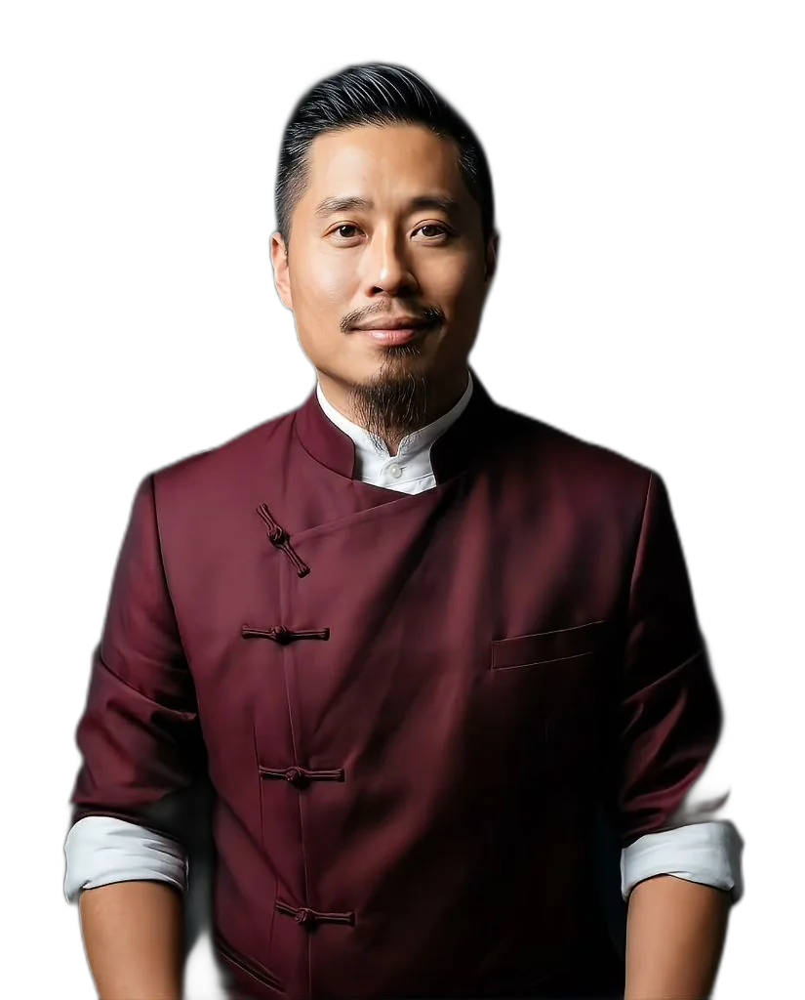
掌过廿载资本浮沉，
终得龙虎一袭道袍。
我是易珹 — 我是二十余年资本浮沉的基金管理人，也是龙虎山下的入世修行者。如今以古老东方智慧投资家的识势之眼，行道门观天之道，为个人与企业观势定局。
关于我
转身，再入世的修行者。
我不是从道观里走出来的。我是从资本市场里转身的。这两段路加在一起，才是你面前这个人。
精通：陈氏形家长眼风水 · 张家道门奇门遁甲 · 八字阴阳五行 · 六爻神算
第一层 · 资本历练
真正经历过资本、项目、风险与人性
二十年房地产私募股权基金管理，操盘九只基金、累计管理规模六十五亿美金 — 不是站在岸上讲商业投资，而是从周期与成败里走过来的人。

第二层 · 管理思想
德鲁克门下的底层逻辑
师承世界管理学大师彼得·德鲁克，为其关门弟子之一，潜修东方智慧与西方管理的融合。对「人」的尊重，构成我看组织、看管理、看企业家的底色。

第三层 · 道家修行
龙虎山下的入世者
江西龙虎山净明宗道长。不用玄学制造恐惧，道门给我的不是退路，是一双更清的眼睛，以道家「道、法、术、器、势」心法智慧，帮人理解人生课题，识人、识时、识机。

第四层 · 东方五术
把道家心法重铸为东方五术体系
五行催眠疗愈明道，一眼识人为法立本，八字六爻奇门东方决策系统定策，东方命功功法成器，明势管理学乘势。五术不是五项服务，是一套。从养住身体，到看清心性，到读懂人、判断时、驭住势。

大玄视界
讲台内外，皆是现场。
沙龙、课堂与镜头里的片段——不剪观点，只留现场。
视频 · 沙龙 / 短视频 / 专题
 ▶
▶ ▶
▶ ▶
▶音乐 · 原创作品
作品
《水墨忘机》
一首自己写的歌。
文章 · 专栏
 3 篇
3 篇八字看人格
进入专栏，选一篇 → 1 篇
1 篇二十四节气
进入专栏，选一篇 →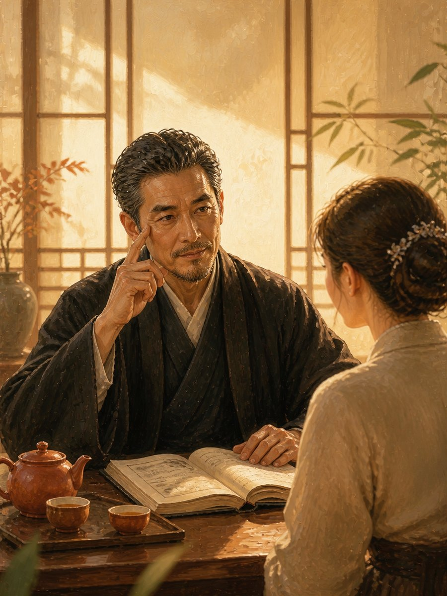
11 篇大玄识人课
进入专栏，选一篇 → 25 篇
25 篇风水小知识
进入专栏，选一篇 →霜降这天，秋天要做最后一次回眸。从这一夜起，天地不再生长，只做两件事：收，和藏。风开始有了金属的声音，草木把最后一分力气从梢头撤回到根上，连虫子也低下头，钻进土里，不再看这人间一眼。古人把这一刻叫作「霜降」——不是天在降霜，而是温度骤降、大地开始结霜的那道门槛。
开篇 · 霜降，到底是哪一天、什么意思？
霜降是二十四节气中的第十八个，也是秋季的最后一个节气，是「秋」与「冬」之间的那次交接。每年公历 10 月 23 日前后，太阳到达黄经 210°，即为霜降。2026 年的霜降，交节时刻是 10 月 23 日 17 时 37 分，对应农历九月十四——从那天傍晚开始，我们正式进入霜降的十五天，下一次交节，是 11 月 7 日 17 时 51 分的立冬。
霜降，九月中。气肃而凝，露结为霜矣。—— 元·吴澄《月令七十二候集解》
第一个冷知识：霜，不是从天上降下来的
「霜降」这个名字，其实是个误会，而且古人早就知道是误会。东汉王充在《论衡》里说得清清楚楚：霜是地面附近的水汽，在夜里遇到足够冷的地面（或草木、瓦片）直接凝华成的白色冰晶，它贴地而生，不从天下落。所以「霜降」这个节气名，描述的不是「天上掉霜」，而是「气温骤降、昼夜温差大」的气候特征——它是天气变冷的信号灯，不是降雪的预报。
第二个冷知识：霜降是一年中昼夜温差最大的时节
全国平均来看，霜降期间昼夜温差达到全年峰值：白天还有「小阳春」的暖，太阳一落气温就断崖式下跌。此时若出现秋季第一次霜，民间叫「早霜」，也叫「菊花霜」——因为霜一落，菊花正开。从终霜到初霜之间，就是农人最看重的「无霜期」。
物候 · 霜降三候：一只豺、一山叶、一洞虫
一候 · 豺乃祭兽。豺狼开始大量捕猎，把猎物陈列开来，像在「祭天」。古人从中读出的不是血腥，而是「报本」：先祭后食，感念天地给出的这一口饭。
二候 · 草木黄落。叶子从最外层开始枯黄、飘落。树不是「死了」，而是主动卸下枝头的负担，把力气收回根部——这是秋天的减负。
三候 · 蛰虫咸俯。「咸」是都，「俯」是低头。所有的虫子低下头，钻进洞里，不吃不动，进入冬眠。天地间最后一个声音也关掉了。
把三候连起来看，你会发现古人的用心：他们观察的不是「冷」，是「退」。动物退、叶子退、虫子退——整个自然界都在做同一件事，把向外铺开的东西，一点点收回到核心里去。
神话 · 青女：那个在秋夜里弹琴的霜神
霜在中国神话里，有一位专门掌管它的女神，叫青女，出自《淮南子》：「至秋三月，地气不藏，乃收其杀，百虫蛰伏，静居闭户，青女乃出，以降霜雪。」民间还流传着更动人的版本：相传青女是月宫中伐桂的吴刚的妹妹，住在青要山上，抚一把七弦琴。每到秋深，她便在夜里拨弦，琴声一起，人间便落霜。霜不是灾，是音乐落下来的样子。
思想 · 道家眼里的霜降：霜不是灾难，是刻度
《淮南子·天文训》：「阳气胜则散而为雨露，阴气胜则凝而为霜雪。」在道家的世界观里，天地之间只有一件事在不停发生：阴与阳的消长。霜雪既不是老天发脾气，也不是谁犯的错，它只是阴阳推移到某个刻度时，自然浮现出的结果。
《庄子·知北游》里，老子教人「疏瀹而心，澡雪而精神」——疏通你的心，像打扫河道一样；用霜雪洗一洗你的精神。「澡雪」二字，从此成了中国人笔下「洗净精神」的代名词，而它出现的背景，恰好就是秋末冬初——一年里最该清理自己的时候。
《黄帝内经》给秋天定了一个词，叫「容平」——万物到此已有定形，从容而平静：「收敛神气，无外其志」——不要把自己的心劲再往外撒了。霜降的功课，说到底就一个字：收。道家不问「霜为什么来」，只问「霜来了，我该怎么安顿自己」。前一个问题是抱怨，后一个问题是修行。
炼养 · 陈抟老祖的霜降坐功
道家把一年当作一个大的呼吸周期，把二十四节气当作二十四个修炼的关卡。北宋陈抟（号希夷先生）创制「二十四气导引坐功」，每个节气配一式，由明代高濂收入《遵生八笺》而流传最广。霜降一式：每日丑寅时平坐，舒两手、攀两足，随用足间力纵而复收五七度，叩齿、吐纳咽液。译成今天的动作就是：择时静坐、舒手攀足（牵动腰髋腿后侧）、叩齿三十六下、吐纳咽津。这套坐功真正的价值不在动作，而在念头：人的身体是有节气的——什么时候该舒展、什么时候该收敛，古人已经替我们标好了刻度。（传统导引文化，非医疗建议；腰腿有旧伤或孕期者请勿勉强。）
道门 · 九月的九天：九皇会
农历九月初一至初九，是道门一年一度的九皇会——北斗九皇大帝圣诞之期，初九同时是北斗众星之母斗姆元君的圣诞。这九天里信众持斋、诵经、礼斗，祈愿消灾解厄。2026 年九月初九为 10 月 18 日，霜降落在农历九月十四（10 月 23 日）——礼斗与霜降，本就是同一套时间系统里的两件事：一边是道门在人间点灯礼斗，一边是天地在头顶转动星辰。
人间 · 霜降怎么过：从柿子到芋鬼
全国多地吃红柿——「霜降吃丁柿，不会流鼻涕」，既时令，也讨「事事如意」的彩头；多地登高赏菊饮酒——「霜打菊花开」，菊花是古人眼里的「候时之草」；闽南台湾进补吃鸭——「补冬不如补霜降」；广西玉林吃牛肉，山东拔萝卜，广东高明「打芋煲送芋鬼」辟凶迎祥；旧时军营此日祭旗纛、阅兵（《明会典》：「秋祭用霜降日」）；民间还有扫墓祭祖、焚烧五色纸送寒衣的旧俗。把这些习俗排在一起看，共同逻辑只有两个字：准备——准备热量、准备温暖、准备安全、准备心情。古人从不与季节对抗，他们只是提前一步，把日子安排好。
养生 · 敛阴护阳：把阳气收回来，把干燥润下去
起居：早卧早起，霜降昼夜温差达全年峰值，早晚加衣，护住颈、背、腹、膝、足。饮食：不宜猛补，宜平补润燥——山药、莲藕、萝卜、银耳、梨、百合、柿子之类当令之物最合时宜。心情：秋气萧瑟易生「悲秋」，「使志安宁，以缓秋刑」——少一点向外消耗，是霜降最要紧的养心法。小功课：晨起叩齿三十六下、搅舌咽津，缓解秋燥、收敛心神。（养生内容仅供传统文化参考，不构成医疗建议；慢病、孕产及服药人群请遵医嘱。）
诗心 · 霜降的句子，古人已经替你写好了
风卷清云尽，空天万里霜。野豺先祭月，仙菊遇重阳。秋色悲疏木，鸿鸣忆故乡。谁知一樽酒，能使百秋亡。—— 唐·元稹《咏廿四气诗·霜降九月中》
至于霜降的颜色，唐人还有一句更流传的：「霜叶红于二月花」。同一片叶子，春天是嫩的，秋天是烈火的。霜不是把叶子打死了，是把它逼出了最后、也是最亮的那点红。
写在最后：霜降不是结束，是收拢
霜降是秋天的最后十五天。它不喧闹，不悲壮，只是安静地把世界調成一个更慢的档位：草木退、百虫藏、热气收。道家在这一天讲的道理其实很朴素——天地都在收的时候，你也不必硬撑着往前冲。把心收回一点，把觉睡足一点，把该暖的地方暖一暖，把那些无用的、费神的、耗人的东西，像落叶一样放下去。
霜落的夜里，天地很干净。愿你在最深的秋凉里，收藏住最暖的自己。
本文为传统文化科普整理，主要参考《淮南子》《庄子》《黄帝内经》《遵生八笺》及元稹《咏廿四气诗》等典籍文献；养生内容仅供文化参考，不构成医疗建议。
道家心法
道法术器势，
一张施工图。
三识定局，
五层施工。
道法术器势，出自《道德经》与法家，被我用成一张施工图：道明向，法立本，术立策，器成事，势放大。五层层层包裹，顺序错一步，后面全是白费。但框架只解决看清之后怎么施工，不解决对谁、何时、从哪下手。所以我在前面加了三个识：识人、识时、识机。
「以道驭术，术必成；离道之术，术必衰。」— 庄子
「道为术之灵，术为道之体。」— 《孙子兵法》
| 层 | 一字诀 | 一句话 | 自检问句 |
|---|---|---|---|
| 道 | 明向 | 本质、规律、价值取向 | 为什么做，什么算对 |
| 法 | 立本 | 规则、制度、标准、流程 | 按什么逻辑运转 |
| 术 | 立策 | 方法、技巧、谋略、经验 | 用哪个动作做成 |
| 器 | 成事 | 工具、系统、资源、载体 | 用什么承载 |
| 势 | 放大 | 时空趋势、外部合力 | 什么时候推，借谁的力量 |
主张
不算命，
破局。
普通玄学博主讲「准不准」，我讲「怎么用」。把易经、奇门、八字、六爻、风水，从预测工具，重铸为企业家可用的决策系统。
01 · 识人
看清人心
谁值得合作、谁是贵人、谁是耗损之人——八字、面相、行为、语言背后的用人逻辑。
栏目 ·《大玄识人课》
02 · 识时
看清周期
做对事，还要选对时。投资、转型、扩张、收缩——顺势而为不是躺平，而是高级行动。
栏目 ·《识时者》
03 · 识机
看清入口
项目有没有气数、空间与人的关系、合作与转型的关键节点——机会不是追来的，是识出来的。
栏目 ·《大玄破局》
东方五术
一心 一人 一时
一身 一势。
五术不是五项服务，是一套。点开每一术，看它为谁而设。
五术不是五项服务，是一套。
一心、一人、一时、一身、一势，合起来才完整。
多数人真正需要的只是其中一两项，不是全部。首次沟通我们只做一件事：
判断你现在的症结压在哪一层 —— 先判断，再谈方案。
他们眼中的我
来过的人，后来怎么说。
心 · 对应「对应「道」五行催眠疗愈
反复出现的处境，多半是没被看见的心性在重复。
解决 — 旧模式轮回、情绪卡点、说不清的困局、明知不该却总在同一个地方跌倒。
做法 — 以五行辨性情之偏，借催眠回到潜意识层面，把那段没被看见的东西找出来、松开。
适合 — 长期焦虑、关系反复、事业总在同一处卡住的人。
「这件事，我是不是已经遇到第三次了」
人 · 对应「对应「法」一眼识人法
不靠猜，靠可验证的形与神，把一个人的底牌提前看清。
解决 — 选错合伙人、用错人、看错亲家、谈判时读不准对方的真实意图。
做法 — 以形家之法观骨相气色，以言谈举止观心性脉络，交叉印证，给可验证的判断而非玄谈。
适合 — 正在选合伙人或核心高管、面临重要合作与婚配判断的人。
「他真正要什么，我说得出来吗」
时 · 对应「对应「术」东方决策体系
八字看人，六爻问事，奇门定时机。三套判据，回答何时该动、从哪落子。
解决 — 何时动、从哪切、成不成。三个问题，三种工具，不混用。
做法 — 八字看禀赋与节律，六爻问一件具体事的成败，奇门定时空里那个可落子的点。
适合 — 重大投资与事业转向、关键人事决策、家宅与企业布局。
「此刻是发力，还是收手」
身 · 对应「对应「器」东方命功功法
身体是承载一切决策的器物。命功是把器物养住，让精力跟得上想法。
解决 — 久坐耗神、精力断崖、心气不聚、长期紧绷后恢复不过来。
做法 — 以调息、导引、站桩与作息节律为骨，按个人禀赋与当下状态配功，不套模板。
适合 — 高强度决策者、长期熬夜者、想开始修身但不知从何入手的人。
「我的身体，还跟得上我的想法吗」
势 · 对应「对应「势」明势管理学
东方的势与德鲁克的目标管理合在一处：把对的事，交给对的人，在对的时机做成。
解决 — 组织不顺、团队带不动、战略落不了地、制度定了一堆却没人执行。
做法 — 先用三识辨人、辨时、辨机，再用德鲁克的目标与责任体系落地，最后以东方之势校准节奏与人心。
适合 — 创始人、决策层、面临战略选择期或组织磨合期的企业。
「我的组织，此刻是顺风还是逆风」
你怎么知道SpaceX要在第五天抛掉？太神了！帮我赚了一大笔。
感谢老师提醒我在520前要看清楚与前男友的关系及做好背景调查，后来发现他是骗子，差点结婚了，万幸。
孩子选择学校，母亲坚持选择她要给孩子最好的，孩子最后不忍压力，有轻生倾向，后来靠老师五行催眠引导开朗。
常见问答
来之前，你可能想问。
咨询需要准备什么？
出生年月日、尽量精确的出生时间与出生地。时间不确定也没关系，可以先约一次「定时辰」，通过过往经历反推。
线上还是见面？
都可以。视频、语音一对一进行，确保你在安全且轻松的情况下，全面了解你想要了解的。
会算什么、不算什么？
不算生死，不制造恐惧，也不替你做决定。我给的是趋势、窗口与参考思路 — 最终的选择权，永远在你自己手里。
这是算命吗？
不算命，算破局。术数于我是工具，不是预言 — 我不制造恐惧，也不替人做决定，只讲判断逻辑与破局路径。算得准，不如用得好。
不接单的原因？
有些单我不接，不是架子，是承负。
怎么开始流程的？
说明处境 → 初步沟通 → 定方案。第一次沟通不收费，也不做推介。你把事说清楚，我判断该不该接、该从哪一层入手。若不适合，我会直接说。
联系我
想跟我聊聊吗？
不急着定方案。三种方式，看哪一种更贴你此刻的需要。沟通后再谈，欢迎联系。
咨询
一对一 · 围绕一件具体的事
先把你眼前的局说清楚：对谁、何时、卡在哪。多数情况一次沟通就能定下方向，需要深看再另约。
- 重大决策与事业转向
- 合伙、用人、婚配的判断
- 家宅与企业布局
- 反复出现的心性与关系困局
课程 / 沙龙合作
系统课 / 专题课 / 沙龙主题
给想了解专题趋势或自己学会看的人。讲清原理与判据，不卖口诀，不承诺速成。系统课沿心法与五术展开，专题课与沙龙定制深讲。
- 想对专题沙龙初步了解的人
- 想建立完整判断框架的人
- 已有基础、想补齐底层逻辑的人
- 想在自己行业里用得上的从业者
企业内训
面向决策层与管理团队
东方管理框架与德鲁克的管理语言并用。不做成功学，只做能落到人和事上的判断与机制。
- 战略选择期与转型期
- 组织磨合、核心团队搭建
- 关键人事决策与传承安排
合作邀约
写下你的来意，
发到邮箱。
我们会在 3 个工作日内回复。
局有定数，人有活路。
识机者不争，识时者不忙，识人者不惑。


本站内容为传统文化研究与个人观点分享，不构成医疗、法律或投资建议。
我们不搞宿命审判，也不贴道德标签。从心理防御机制与命盘结构，解构亲密关系中「摇摆与越界」的底层心智逻辑。
出轨是行为，边界弱是结构。一个人如何选择，永远有自由意志的参与。八字与心理学只回答一个核心问题：这个心智结构，让他在守住边界时是感到省力，还是极度费力？—— 本讲边界与共识
破题：撕掉「道德审判」的标签
谈到感情里的越界，大众第一反应往往是宣泄式的词汇：「花心」「渣男/渣女」。但这除了提供情绪出口，对理解一个人的人格机制毫无益处。
在子平命理中，所谓「感情星混杂」「配偶宫被合」，在现代 NLP（神经语言程序学）中对应的其实是：注意力次感元的过度敏感，以及共情边界的弥散化。出轨并不是道德基因的突发突变，而是这个人的防御体系就像一扇没装锁的纱窗——外界一敲，他就下意识觉得门该开了。
 第一判据 · 感情星混杂：多焦点的「次感元」注意力分散
第一判据 · 感情星混杂：多焦点的「次感元」注意力分散
八字技术口径中，男看财星（正财为妻、偏财为情人/新体验），女看官杀（正官为正夫、七杀为偏缘）。正偏同透并非单纯的「贪」，而是心智中缺乏单一的评估优先级：
正星心智：追求稳定、契约感、长周期安全与可预期性。
偏星心智：渴求多巴胺脉冲、意外奖赏与即时探索欲。
身强 vs 身弱的区别：若日主身强（自我效能高），这股能量化为卓越的高情商与多维人脉调度力；若日主身弱（自我内核空虚），则表现为谁来都无法拒绝，极易被动陷入暧昧沼泽。
第二判据（最核心硬核）· 配偶宫被合：焦虑-矛盾型依恋与「被动失守」
日干代表「我」，日支代表「配偶宫（亲密关系的私人城堡）」。很多人分不清这两者的区别：
日干合财官（我合外界）——主有情、重承诺、渴望建立长久稳定关系，心理学归属于「安全型依恋」。
日支被旁支合（家被牵动）——配偶私密空间被外力牵引，心理学对应「拯救者情结」与难以设防的边界融合。
配偶宫被合的人，内心常有「不忍拒绝」的潜在包袱。外界轻轻推门，他生怕关门会伤害对方，结果反而把原本最重要的伴侣置于风险之中。
第三判据 · 桃花带合落忌神：多巴胺受体的耐受不足
《子平真诠》强调神煞不能凌驾于格局之上。单独一朵桃花只是才艺与异性缘好。唯有桃花与合局同时出现，且落在忌神上时，它才代表耐受平淡生活能力的降低，驱使个体去寻找高强度的即时反馈。
 心智重塑：如何在起风时关上门窗？
心智重塑：如何在起风时关上门窗？
八字里的「官杀」，在现代心理学中就是前额叶的理性执行力与自我界限。如果你的结构偏向边界脆弱，请尝试以下 3 个具象练习：
1. NLP 物理空间锚定——在暧昧或社交过度倾斜的瞬间，身体后撤半步，双脚踩实地面，打破眼神镜面投射，给潜意识注入「抽离」指令。
2. 识别「拯救者投射」——自问：「我是真的对他产生心智认同，还是享受这种被倾诉、被需要的快感？」区分共情与心动。
3. 赋能官杀：设立绝对刚性的红线规则——不要依赖临场意志力。提前设立物理隔离规则：绝不在深夜与非伴侣进行长时间情绪私聊，绝不在封闭空间单独相处。
—— 八字看人格 · 20 讲系列专栏 · 原创出品
下一讲预告：第 2 讲｜讨好型人格：为什么你总在命盘里「生助他人」？
小人不是指认具体的人，而是一种重复出现的博弈模型。命理从不针对具体的人事进行道德定罪——命局所呈现的，是你的人际交互管道是否存在结构性漏洞。换掉环境而不重构心智，你换掉的只是下一次背叛者的名字。
 一、破题：小人不是一个人，是一个动态结构
一、破题：小人不是一个人，是一个动态结构
「为什么每次合伙总是我吃亏？」「为什么我掏心掏肺对朋友，最后成果都被他们抢去？」在心理学中，反复遇到的困境从来不是巧合。在子平命理中，招小人被精准划分为三大通道：比劫夺财、伤官见官、枭神夺食。
二、三大「小人通道」的心理学投射
1. 比劫夺财：同侪边界失灵与老好人陷阱。比劫为「同类、同事、同伙」，财星为「自身资源与领地」。比劫为忌夺财，是同类人天然来瓜分你的利益。在 NLP 沟通中，这类人缺乏清晰的心理财产边界，总试图用「无底线的分享与老好人做派」购买安全感，反向筛选并吸引了掠夺型人格的侵入。
2. 伤官见官：权威移情冲突与前额叶的过度防卫。伤官为表达与锋芒，官星为体制与上级。伤官直克官星，是言语锋芒直接正面冲撞规则。心理学上这是未解决的早期「反抗权威移情」——当事人常自诩「性子直、说了真话」，却因攻击性表达触发了上位者的自我防卫，最终遭到规则层面的无声扼杀。
3. 枭神夺食：依赖退行与核心圈层的「自己人背叛」。食神为天真灵气与原创产出，枭神为策略性的庇护。枭神夺食，代表着被敬重的长辈、引路人或极度信赖的心腹暗中掠夺劳动果实。其潜意识是把决策权完全上交的「婴儿退行」，最终在失去对等博弈能力时被无情蚕食。
 三、小人通道与场域对照表
三、小人通道与场域对照表
| 命理通道 | 心理投射机制 | 小人的典型身份 | 解药 |
|---|---|---|---|
| 比劫夺财 | 边界模糊，习惯用讨好维系虚假联盟 | 同辈同事、合伙伙伴、酒肉朋友 | 官杀制劫：设立物理契约，提升翻脸门槛 |
| 伤官见官 | 反抗父权移情，言语带刺欠缺制约 | 直属上级、监管者、体制权威 | 印星通关：强化前额叶理性，以柔克刚 |
| 枭神夺食 | 心智退行，寻找全能导师让渡主权 | 引路人、干爹干妈、心腹密友 | 财星制枭：用现实主义核算，告别神化盲信 |
四、岁运通道：冲是明枪，合是暗箭
原局是倾向，岁运是引发。很多人只害怕「冲」（争吵撕破脸），但命理与 NLP 实践表明：被合走往往比被冲走更致命。冲是公开冲突，容易让人拉响警报；合则是以极度甜蜜、称兄道弟的形式靠近，待你卸下心防，核心资源已被暗中抽空。
五、心智重塑清单：如何关紧命局大门？
1. 辨识通道类型——分清当前摩擦属于利益分配（比劫）、权威对抗（伤官）还是信任盲区（枭神），对症下药。
2. 落地官杀力量：建立刚性契约——不要依赖人情道德，在合作与借贷前白纸黑字写清边界，杜绝任何「下不为例」的模糊空间。
3. NLP 第三人称抽离法——跳出受害者委屈心态，站在天花板视角观察：「我的哪些过度示弱或攻击性言辞，正在向对方递出伤害我的刀刃？」
八字看人格 · 20 讲系列专栏（B 线）· 原创出品 · 允许读者个人阅读与保存
自恋不是自信过剩，而是缺乏内化约束与共情神经闭锁。本讲用子平偏枯结构解构自恋心智的底层逻辑。
自恋型人格障碍（NPD）是严谨的临床医学概念。命理不做心理诊断，更不给具体个人定性贴标签。本讲探讨的是哪一类命局的偏枯与心智模式，会让个体在人际互动中极度缺乏换位思考与规则畏惧心。—— 本讲共识与专业边界
 一、破题：自恋的核心是「缺约束与共情闭锁」
一、破题：自恋的核心是「缺约束与共情闭锁」
临床心理学认为，自恋型人格的核心并非「过度自信」，而是严重的共情缺陷以及持续渴望外部供养以维系虚幻的自尊。在八字命理中，这对应的不是简单的身强，而是两大约束与表达机制的瘫痪：官星不显（缺约束）与枭神夺食（共情输出通道被锁死）。
二、自恋心智的两大核心病理结构
1. 官星全无或极弱：缺乏能对我说「不」的机制。官杀是规则、边界、敬畏感与外部他者的存在证明。若身强极旺而官星全无或受制太过，在 NLP 模型中对应着锁死的第一人称（我）知觉系统：潜意识里从不认为自己会犯错，所有来自外部的修正意见都会被直接解读为敌意攻击。
2. 枭神夺食：共情镜像神经元的阻滞。食神与伤官是一个人向外滋养、感受他人悲喜的通道。当偏印（枭神）强旺直接夺去食神时，个体形成了完全内缩而冷酷的自我防御系统。他们即便看起来彬彬有礼，却在情感实质上无法感受伴侣的痛苦，常常以高高在上的姿态进行冷暴力或认知操控（Gaslighting）。
 三、命局结构与自恋心智特征对照表
三、命局结构与自恋心智特征对照表
| 命理结构 | 心理学投射机制 | 典型人际模式 | 转化建议与解药 |
|---|---|---|---|
| 身旺比劫重无官 | 绝对第一人称过滤，无内化超我 | 不认错、不服管、自大狂妄、唯我独尊 | 寻引路人：引入刚性契约与敬畏的规则 |
| 枭神夺食＋印重 | 镜像神经元受阻，全能自洽闭环 | 表面儒雅温和，实则极度冷血、煤气灯操纵 | 财星破印：回归柴米油盐，接地气做事 |
| 伤官旺无印制 | 傲慢补偿机制，迫切需要被仰望 | 语言尖酸刻薄、才华外露但不能容纳平庸 | 印星养心：培养深沉内省与共情包容力 |
| 专旺格无食伤 | 自我能量孤立闭锁，拒绝异质输入 | 狂热偏执、听不进建议、将伴侣物化为配角 | 食伤泄秀：将极致自我升华为专注的作品 |
四、岁运通道：自恋结构的显形与转机
逢比劫或印星被引动的大运流年，当事人的自我中心往往进一步激化，听不进任何外界劝诫；逢官杀被冲克的年份，容易与权威规则发生剧烈碰撞而遭遇现实惨败。唯有在食伤引通或官星得力的年份，自我铠甲才会短暂松动，是进行心智重构的最佳契机。
五、自省与人际防身指南
1. 识破回音壁：停止无谓的情绪反思——若发现一段关系中对方永远正确、每次沟通最后都是你在自责，应立即采用「灰石法」降温，拒绝充当对方自恋自尊的燃料。
2. 刻意激活第二位置（The Second Position）——如果你发现自己习惯性评判他人，在争论时强制暂停 30 秒，换位思考对方说这番话时的脆弱情绪，重启镜像神经元感知。
3. 建立「否定权威」机制——在生活或事业中，主动寻找一到两位真才实学、敢于直接对你说「不」的合伙人或长辈，以此补齐命盘里缺位的「官杀之锚」。
八字看人格 · 20 讲系列专栏（B 线）· 原创出品 · 允许读者个人阅读与保存
商场如战场，识人是第一生产力。招错一个人、信错一个伙伴、看错一个对手，代价往往比算错一笔账更大。
「一眼识人法」的道理很简单：一个人是什么「天干日主」，就长成什么样子、做什么动作、穿什么衣服、说什么口头禅、怎么对人。 日主藏在八字日柱的天干里，是「我」的本命。它像一张底色，决定了你第一眼看到的大半信息。
 十天干分五组，各有一股「气」：
十天干分五组，各有一股「气」：
- 木主生发——向上、成长、柔韧；
- 火主礼——热烈、光明、感染；
- 土主信——厚重、承载、可靠；
- 金主义——刚毅、决断、原则；
- 水主智——流动、通达、深邃。
同一组里，阳干（甲、丙、戊、庚、壬）外放、主动、显；阴干（乙、丁、己、辛、癸）内收、柔性、藏。
但请你记住：这套方法不教你「贴标签」，而是教你在人群中「认出一个人」。下面每一个日主，都不是一张属性表，而是一个活生生的人。读的时候，你会想起某位老友、某个对手、某个下属——那一刻，你就摸到门道了。
先来十条商场识人术（观人用人 · 谈判识势）
一、先看眼睛，再看手。 眼神飘忽不定者，多藏事；握手软而无力、手心发汗者，底气不足。眼睛是心的窗户，手是诚意的刻度。
二、看他怎么对待「没用的人」。 对服务员、司机、下属颐指气使的人，一旦你失势，他翻脸比翻书快。对下位者的态度，是品性的照妖镜。
三、听他夸谁、贬谁。 一开口就贬低前任、前老板、前合伙人的，将来也会这样贬你。懂得感恩、记得帮过自己的人，才可深交。
四、看钱的态度。 该花的钱不肯花、处处算计小利的人，成不了大事；花钱无度、寅吃卯粮的人，守不住基业。会花钱是本事，会算账是底线。
五、看他的「急」。 谈判桌上急着成交、急着签字、急着让你做决定的人，多半有求于你、有难言之隐，或标的本身有问题。越催你，越要慢。
六、看他说「不」的方式。 一味点头称是、从不拒绝的人，不是好说话，是没主见、不可靠。敢于在关键时刻说「不」的人，才是有立场、有担当的合作对象。
七、看他的时间。 约会迟到成性、会议总拖延的人，要么不尊重你，要么自身管理混乱。守时，是靠谱的最低门槛。
八、看他的情绪出口。 压力之下是否失控、酒后是否失态、遇挫是否迁怒旁人。一个人在情绪底部的样子，才是他真实的人品下限。
九、看他的朋友圈。 看他最常往来的三五个人是什么成色。人以群分，他的圈子，就是他的另一个「日主」。
十、谈判识势：先摸他的「价码」再出手。 对方越是在无关紧要处斤斤计较，越说明真正想要的东西在别处；越是云淡风轻，越要警惕他憋着大招。听其言，观其色，更要看他为何此刻出现在这张桌上。
这十条是「术」，下面十天干的「相」是「法」——术能应急，法能通吃。
十天干，十个「人」
接下来，我将把十个日主一个一个请到你面前。他们不是标签，是活生生的人——有的你似曾相识，有的就是你自己。按五行分组：
- 木：甲木（参天大树）· 乙木（藤萝花草）
- 火：丙火（太阳之火）· 丁火（烛火之光）
- 土：戊土（高山厚土）· 己土（田园沃土）
- 金：庚金（刀剑之金）· 辛金（珠玉之金）
- 水：壬水（江河之水）· 癸水（雨露之水）
识人先识「日主」，看相先看「气」。 下次走进会议室，先别急着开口——看一眼对方的脸，听一句他的口头禅，品一品他点的那道菜，你开口之前，已经先赢了一局。
——易珹（大玄道长）
大玄识人课 · 原创系列 · 允许读者个人阅读与保存
你多半在某个饭局的末席见过他。
他一进门，肩背挺直，步子带风，像一棵松被风吹进了屋里。他不坐最中央的位置，可他往那儿一坐，一开口，整桌人就自动静了下来。你会下意识地看向他——不是他多大声，是他身上有股「这里我说了算」的气。
 他有一张偏方或偏长的脸，额头宽，眉毛浓而直，骨架大，站在那儿像棵立着的树。你注意到他的手：说话的时候，习惯往下压，一下，又一下，像要把什么「定住」。那是一种当惯了主事人才有的动作。
他有一张偏方或偏长的脸，额头宽，眉毛浓而直，骨架大，站在那儿像棵立着的树。你注意到他的手：说话的时候，习惯往下压，一下，又一下，像要把什么「定住」。那是一种当惯了主事人才有的动作。
他穿得挺括、深色、硬朗，西装料子厚实，皮鞋锃亮。你几乎想不起他穿过什么花哨的东西——他不需要靠衣服出彩，他自己就是那个「场」。
他最爱说三句话：「这事我说了算」「听我的」「没关系，我来处理」。他不绕弯子，有什么说什么，扛起事来从不躲。合作出了岔子，别人往后缩，他往前站。可你跟他处久了也明白：他固执，他要面子，他听不得「你错了」这三个字。
他吃饭清淡，爱吃蔬菜、根茎，不碰那些花里胡哨的菜。闲下来，他去爬山、种花、管一摊子事——他得一直「做主」，才觉得踏实。他喜欢青色、深蓝，像喜欢他自己那棵树的颜色。
跟甲木打交道，别跟他争，给他「做主」的感觉，比给他钱更管用。 他是天生的头儿，你要做的，是让他觉得：这盘棋，是你和他一起下的。一旦他认你是自己人，天塌下来，他先替你顶着。
——易珹（大玄道长）
大玄识人课 · 原创系列 · 允许读者个人阅读与保存
乙木是另一种人。你是在角落认识她的。
她靠在一旁，安静地听大家说话，偶尔轻轻拨一下头发，笑起来眼睛弯弯的。她不争中心，可不知怎么，聊着聊着，所有人都围到了她身边。她像一株藤，总能找到可以攀附的支点，也总能让你心甘情愿地，让她靠一靠。
 她身形柔，线条修长，瓜子脸或鹅蛋脸，眉眼清秀。她爱靠、爱倚、爱挽人的手臂——那不是软弱，是她的方式：借力。她穿浅淡、带花的软料子衣裳，配饰精致，不张扬，却总让人多看两眼。
她身形柔，线条修长，瓜子脸或鹅蛋脸，眉眼清秀。她爱靠、爱倚、爱挽人的手臂——那不是软弱，是她的方式：借力。她穿浅淡、带花的软料子衣裳，配饰精致，不张扬，却总让人多看两眼。
她爱说「都可以」「随缘吧」「你说了算」。别以为她没主意——她只是不跟你硬碰。夹缝里，她总能绕出一条路来，借你的力，成她的事，最后还让你觉得，是自己愿意帮她的。
她爱吃时蔬、清粥，喝花果茶，口味淡淡的。闲下来，她插花、读书、做手工，喜欢那些安静又美的东西。你跟她合作，最难熬的是她的优柔寡断——她总在几个选项之间徘徊，让你干着急。可你也会慢慢发现，很多僵局，都是她轻轻一绕就解开的，还解得比谁都漂亮。
跟乙木打交道，多给选项，少施压力。 她像藤萝，你要做的，是当那棵可以让她安心攀附的树。你给她一点依靠，她还你一整个春天。
——易珹（大玄道长）
大玄识人课 · 原创系列 · 允许读者个人阅读与保存
丙火这个人，你是先听见、再见到的。
人还没进包厢，笑声先到了。门一开，满脸红光，眼睛亮得晃人，他见谁都熟，三步并作两步过来，拍着你的肩膀喊「老哥」。这一下，冷场的局面就活了，整个屋子像被点了盏大灯。
 他脸圆或饱满，气色红润，笑起来感染力极强，你明知道他是自来熟，还是忍不住跟着高兴。他手势大开大合，坐不住，走到哪儿都是气氛的中心。他敢穿红的、亮的、暖的，讲面子——也真给你面子，当众把你夸成一朵花。
他脸圆或饱满，气色红润，笑起来感染力极强，你明知道他是自来熟，还是忍不住跟着高兴。他手势大开大合，坐不住，走到哪儿都是气氛的中心。他敢穿红的、亮的、暖的，讲面子——也真给你面子，当众把你夸成一朵花。
他爱说「包在我身上」「多大点事」「开心最重要」。他慷慨、讲义气，朋友遍天下，你缺什么，他一句话就替你张罗。你求他办的事，他未必都记得，但当下那份热乎劲儿，是真的。
可他也急、也冲动、也耳根子软，听不得两句好话。你捧他两句，他恨不得把心掏给你。
他爱吃辣、吃热乎的，好酒好茶，口味浓。闲下来，聚会、旅行、唱歌，哪里热闹他往哪去——他天生就该站在人群中间，被需要，也照亮别人。
跟丙火打交道，夸他、给足他面子，他什么都愿意为你做。 他是团队的太阳，你要做的，是别让他烧过了头，也别忘了在他最热的时候，递一把扇子。
——易珹（大玄道长）
大玄识人课 · 原创系列 · 允许读者个人阅读与保存
丁火和丙火，正好相反。
他坐在角落，安安静静，眼睛温和有神，像一盏灯——不刺眼，却把四周都看透了。你热闹你的，他不掺和，只在一旁淡淡地看着，偶尔嘴角一扬。等你回过神来，才发现自己的那点心思，早被他瞧了个明白。
 他身形偏瘦，五官精致，皮肤白净，脸小小的。他习惯低头浅笑，说话轻声细语，总爱用眼角余光观察人。他穿得素净、淡雅，浅色、细腻，不追潮流，却自有一份品味，细看哪一处都经得起推敲。
他身形偏瘦，五官精致，皮肤白净，脸小小的。他习惯低头浅笑，说话轻声细语，总爱用眼角余光观察人。他穿得素净、淡雅，浅色、细腻，不追潮流，却自有一份品味，细看哪一处都经得起推敲。
他爱说「我觉得还好」「先看看吧」「你懂的」。他不张扬，可心里门儿清，一句话点到为止。你跟他聊，常常是他三言两语，就把你想了三天的事说透了。
他爱吃精致的点心、煲汤、甜品，口味偏甜偏淡。闲下来，他读书、写作、喝茶、收藏，喜欢安静的小圈子，一个人待着也不闷。热闹是丙火的，丁火要的是那份清亮。
跟丁火打交道，别唬他，真诚一点、耐心一点。 他是团队的军师，你要做的，是给他一份信任，他回你的，是洞若观火的清醒。你只要让他觉得你值得，他那盏灯，会一直为你亮着。
——易珹（大玄道长）
大玄识人课 · 原创系列 · 允许读者个人阅读与保存
戊土这个人，你第一眼不觉得出彩，却越处越踏实。
他坐在那儿，肩宽背厚，稳稳当当，像一座山。话不多，可每句都沉甸甸的，落在桌上，响。他说要办的事，你就知道，一定会办。他不给你画大饼，答应一句，是一句。
 他脸方圆，五官端正，皮肤偏黄或偏深，看着就可靠。他动作缓慢沉稳，走路踏实，习惯双手抱臂，不轻易动一下。你几乎没见过他慌——再大的事，到他这儿，都慢了下来。他穿深色、耐穿、有质感的衣服，不追潮流，图个实在。
他脸方圆，五官端正，皮肤偏黄或偏深，看着就可靠。他动作缓慢沉稳，走路踏实，习惯双手抱臂，不轻易动一下。你几乎没见过他慌——再大的事，到他这儿，都慢了下来。他穿深色、耐穿、有质感的衣服，不追潮流，图个实在。
他爱说「慢慢来」「稳一点」「再想想」。这三个词，是他一生的节奏。可你也得忍着点：他保守、固执，变通起来慢半拍，你说破了嘴，他还是按他的来。
他爱吃面食、炖菜、家常菜，口味厚重，一顿饭吃得踏实。他喜欢黄色、棕色这些土地的颜色，穿在身上，也安在心里。闲下来，他收藏、打理房产、下棋、种点东西，喜欢那些能积累、能长久的事。他不求快，求的是根深蒂固。
跟戊土打交道，给他时间，给他信任，别催他。 他是团队的压舱石，你要做的，是让他相信你靠得住——一旦交心，他终身可靠。这世上聪明人多，靠得住的人少，戊土是后者里的金子。
——易珹（大玄道长）
大玄识人课 · 原创系列 · 允许读者个人阅读与保存
己土这个人，是那种你去了就不想走的人。
她脸上总带着笑，面庞饱满圆润，看着就让人安心，像一片收成在望的田。你到她那儿，哪怕只是坐坐，心就静了。她爱照顾人，递茶倒水，轻轻点头附和，你说话，她就温温地听着，眼神里全是你。
 她穿舒适、宽松、素雅的棉麻衣裳，颜色柔和，不扎眼。她总能把一屋子人拢到一块儿——和稀泥，也和人。谁和谁闹了别扭，她三言两语，就都笑了。你是真服她。
她穿舒适、宽松、素雅的棉麻衣裳，颜色柔和，不扎眼。她总能把一屋子人拢到一块儿——和稀泥，也和人。谁和谁闹了别扭，她三言两语，就都笑了。你是真服她。
她爱说「没事没事」「大家都不容易」「你看怎么合适」。她宽容、能容人，是最好的倾听者，你的委屈，她能替你想得比你自己还周到。可她也常委屈自己，一让再让，把自己让到墙角，你看了都替她心疼。
她爱吃家常便饭、粥饭、甜糯的菜，口味平和。她喜欢米色、浅黄、奶咖这些柔和温暖的土色，穿在身上软软的。闲下来，她做饭、养花、照顾家人，喜欢柴米油盐里的那点暖。她不大谈理想，可她把日子过成了诗。
跟己土打交道，护着她一点，别让她一味退让。 她是团队的黏合剂，你要做的，是记得她的好，也替她挡一挡外面的风。你对她的好，她都会记着，加倍地还。
——易珹（大玄道长）
大玄识人课 · 原创系列 · 允许读者个人阅读与保存
庚金这个人，像一把出鞘的刀。
他身形干练，棱角分明，骨架硬朗，鼻梁挺，眼神锐利。你一眼就知道：这个人，不好糊弄。他看你的那一下，像刀锋贴着你的脸划过，凉丝丝的。
 他动作利落，做事干脆，说话斩钉截铁，说到要紧处，习惯用指节敲两下桌面，笃、笃。他穿挺括、利落、质感硬的衣服，西装、风衣，颜色深，风格硬朗，从头到脚透着一股「别废话」的劲儿。
他动作利落，做事干脆，说话斩钉截铁，说到要紧处，习惯用指节敲两下桌面，笃、笃。他穿挺括、利落、质感硬的衣服，西装、风衣，颜色深，风格硬朗，从头到脚透着一股「别废话」的劲儿。
他爱说「行就行，不行拉倒」「就这么定了」「这事没商量」。他讲义气、重原则，为朋友两肋插刀，眼里揉不得沙子。你跟他合作，最舒服的是痛快，最难受的也是痛快——他认准的事，九头牛拉不回，转圜的余地很小。
他爱吃硬、脆、有嚼劲的菜，口味重，好白酒。他喜欢白色、银色、金属的冷冽光泽，像喜欢自己那副利落的身手。闲下来，他健身、搏击、收藏金属件，喜欢那些硬朗、有力量感的事。他不是那种陪你风花雪月的人，他是那种你说「帮我」，他二话不说就出手的人。
跟庚金打交道，直来直去最有效，绕弯子他只会不耐烦。 他是团队的利剑，你要做的，是给他一个够清晰的目标。你给他一个方向，他劈下去，干脆利落，绝不含糊。
——易珹（大玄道长）
大玄识人课 · 原创系列 · 允许读者个人阅读与保存
辛金这个人，是另一种「金」。他不像刀，像一块被打磨到温润的美玉。
他皮肤白皙细腻，五官立体，轮廓清晰，气质清冷。你总觉得他离你有点远，却又忍不住多看两眼。他不笑的时候，有股淡淡的疏离，可一旦笑起来，又让人如沐春风。
 他动作优雅从容，极重细节，习惯整理衣角、扶一扶眼镜，浑身上下挑不出一丝破绽。他穿精致考究、质感上乘的衣服，配饰点睛，简约又高级——你注意不到的那块腕表，可能是限量款。他不炫，但你感觉得到那种「讲究」。
他动作优雅从容，极重细节，习惯整理衣角、扶一扶眼镜，浑身上下挑不出一丝破绽。他穿精致考究、质感上乘的衣服，配饰点睛，简约又高级——你注意不到的那块腕表，可能是限量款。他不炫，但你感觉得到那种「讲究」。
他爱说「还差一点」「再打磨一下」「我来看看细节」。他低调、严谨、精益求精，不鸣则已，一鸣惊人。可他也挑剔，对自己、对别人都严，你稍有马虎，他眉头就轻轻一皱。想走进他心里，不容易。
他爱吃精细的菜、海鲜、点心，口味清淡讲究。他喜欢白色、浅银、淡金这类清亮干净的颜色，像喜欢一切被打磨到极致的好物。闲下来，他品酒、赏珠宝、摄影、鉴赏，喜欢那些精致而有品位的事。他不追求热闹，追求的是「好」。
跟辛金打交道，把细节做扎实，别糊弄他。 他是团队的精工，你要做的，是用你的专业赢得他的认可。一旦他点头，你就有了一个最挑剔、也最可靠的伙伴。
——易珹（大玄道长）
大玄识人课 · 原创系列 · 允许读者个人阅读与保存
壬水这个人，是那种一说起话来就停不下的人。
他身形高大，体态舒展，走路带风，像一条奔流的大江，你隔着老远就能感到他的气场。他一开口，滔滔不绝，从天下大势讲到路边小吃，一个「大」字不离口，动不动就「格局打开」。你听得很累，又忍不住被那股劲儿带着走。
 他脸偏长或椭圆，眼神灵动，气质洒脱。他喜欢走动、比划大方向，仿佛下一分钟就要去干一件惊天动地的大事。他穿飘逸、宽松、有流动感的衣服，深色亮色都敢穿，风格不羁，你怎么看他，都不像会被框住的人。
他脸偏长或椭圆，眼神灵动，气质洒脱。他喜欢走动、比划大方向，仿佛下一分钟就要去干一件惊天动地的大事。他穿飘逸、宽松、有流动感的衣服，深色亮色都敢穿，风格不羁，你怎么看他，都不像会被框住的人。
他爱说「格局打开」「无所谓」「看大方向」。他豁达、大气，不拘小节，朋友多、路子广，天生有做大生意的气魄。你跟他处，痛快是痛快，可也散漫、缺恒心，花钱大手大脚，兴起时什么都敢答应，应完就忘了。
他爱吃海鲜河鲜、汤水类，口味鲜，好流动饮食。闲下来，他旅行、游泳、航海、广交朋友，喜欢广阔而自由的世界。你要想留住他，靠的不是一根绳，而是一片海。
跟壬水打交道，给他舞台，给他自由，别拿条条框框绑他。 他是团队的领航，你要做的，是帮他收一收心，让那股奔流的水，流进该去的河道。
——易珹（大玄道长）
大玄识人课 · 原创系列 · 允许读者个人阅读与保存
癸水这个人，是人群里最安静的那个。
她身形柔，气质清润，像清晨草叶上的一滴露水。你不说话，她也不催你，只那么温温地听着，偶尔浅笑一下。你会觉得，跟她待着，比跟一屋子人应酬还舒服。
 她脸圆润或鹅蛋，眉眼温润，看着就舒服。她动作轻柔，说话轻声慢语，习惯安静地听，不抢话。她穿柔和、舒适、素色或深色的软料子衣裳，风格低调内敛，不抢眼，却经得起细看，越看越有味道。
她脸圆润或鹅蛋，眉眼温润，看着就舒服。她动作轻柔，说话轻声慢语，习惯安静地听，不抢话。她穿柔和、舒适、素色或深色的软料子衣裳，风格低调内敛，不抢眼，却经得起细看，越看越有味道。
她爱说「随便」「都可以」「我知道了」。她温柔、包容、善解人意，让人如沐春风。可她也内敛、藏心事，不轻易表态——你常常不知道她到底在想什么。而她那颗心，其实早已把你看了个透。她不是没主见，只是不急着说。
她爱吃清淡、汤羹、粥水，口味淡，好茶。闲下来，她读书、冥想、听雨、写日记，喜欢一个人安静地待着，自得其乐。热闹是别人的，她有她自己的世界。
跟癸水打交道，多倾听，少追问，给她安静的空间。 她是团队的智囊，你要做的，是耐心一点，等她那句话说出口——往往，那是整盘棋最关键的一句。
——易珹（大玄道长）
大玄识人课 · 原创系列 · 允许读者个人阅读与保存
上个月，一个做建材生意的老哥来找我。坐下第一句就说，道长，我这两年生意没少接，可钱就是留不住，赚多少漏多少，一年到头白忙。
我没急着答，先问他，家里大门一开，是不是一眼能望到阳台？
他愣了，说你怎么知道。
我让他拍张照发过来。果然，大门正对落地窗，中间一览无余，连个挡的都没有。
我说，你不是漏财，是家里的气漏了。门一开，气直冲出去，钱跟着就散。老话讲前门进后门出，说的就是你这种。你在门口加一道屏风，让气拐个弯，先试试。
他照做了。三个月后发消息来，说心里踏实多了，钱也慢慢存住了。是不是屏风的功劳我不敢打包票，但他自己信了，日子就顺了。
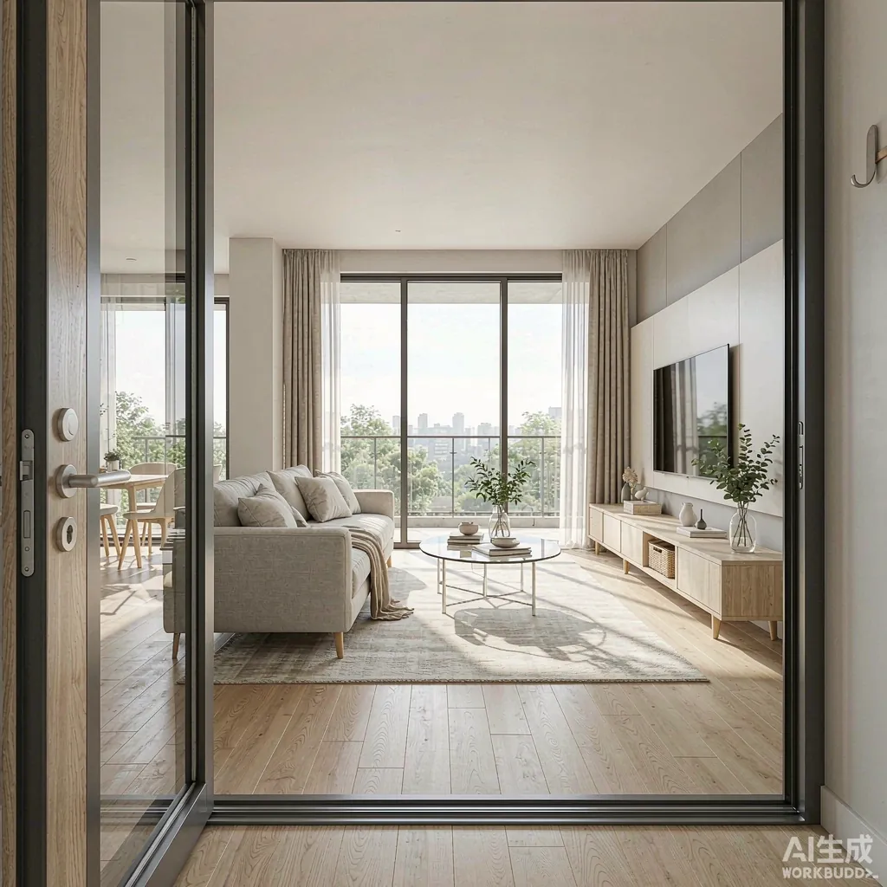
行动清单- ✅ 大门与后窗、后门之间加屏风、玄关柜或珠帘
- ✅ 屏障做半高，透光不透视最好
- ❌ 别让大门、落地窗、后门三点成一线
有回我去一位客户家看房，刚进门，差点被门口的鞋绊一跤。
门口横七竖八摆着七八双鞋，还堆着几个没拆的快递盒。那家的太太挺不好意思，说最近忙，没收拾。
我笑着说，你这不是忙，是把自家的气口给堵了。鞋在风水里代表脚踏实地，可门口鞋一乱，进门的这口气就先乱了，贵人和财还没进门，先被绊一跤。
那天我只给了一个建议：买一个带门的鞋柜，鞋全收进去，门口最多留当天穿的那双。别的都没动。
半年后她跟我说，说不清哪里变了，就觉得家里顺了，老公谈事也顺了。我说，进门清爽了，气就顺了，人就顺了。
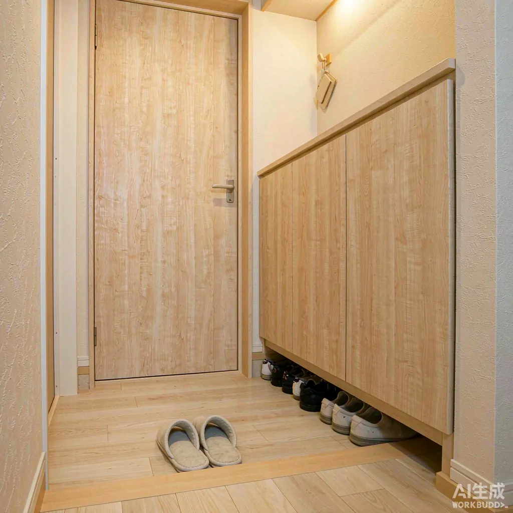
行动清单- ✅ 鞋收进带门的鞋柜，门口只留当天的鞋
- ✅ 玄关保持明亮、干净
- ❌ 别用开放式鞋架把旧鞋全露在外面
前阵子陪个朋友看二手房。一进门，正对面就是厨房，灶台正对着大门口，看得一清二楚。
我跟朋友说，这房子，你先别急着签。
他问为什么。我说，厨房是家里的饭碗，主财库。大门一开，你的财库摊在所有人眼前，这叫财库露白。这家底，进门就漏了。
后来我们又看了几套，有套更离谱，进门正对厕所门。我说这更不能要，秽气冲门，脏气迎面来，住久了人堵得慌。
他说，道长，那这毛病就没救了？我说有救，挂道门帘，过膝盖长，素色棉麻的最好，视线一断，气就缓下来。但能选，还是选个门口干净的。
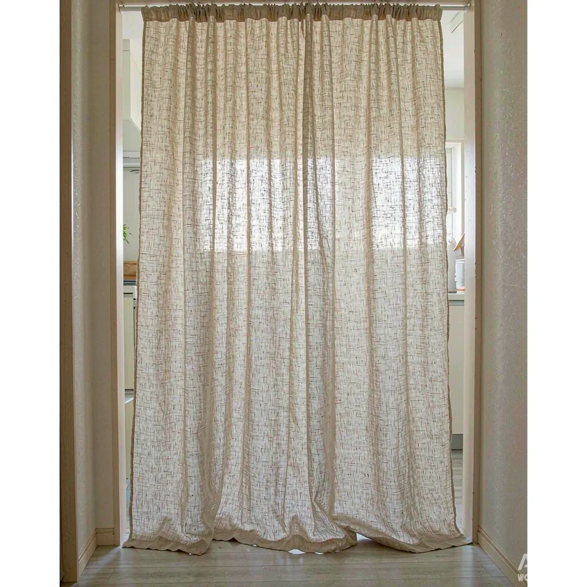
行动清单- ✅ 厨房门、厕所门挂过膝门帘
- ✅ 两门常关，中间放盆阔叶植物挡一挡
- ❌ 别让大门、厨房门（或厕所门）一条直线直冲
有位大姐，家里装修得挺好，就是总觉得漏财，存不住钱。
我去了一看，进门正对着一面大穿衣镜。人一进门，先被自己的影子晃一下。
我说，问题就出在这面镜子上。镜子是把双刃剑，能照大空间，也能把东西弹回去。它正对着大门，进来的气和财，刚进门就被它顶出去了。老话讲镜对门，气难存。
她问那放哪。我说，装大门侧墙，就是进门后你左手边那面，圆镜椭圆镜最好。出门前照照仪容也方便，还不挡财。
她当天就把镜子挪了。后来见面，她说确实觉得家里亮堂了，心里也安稳了。
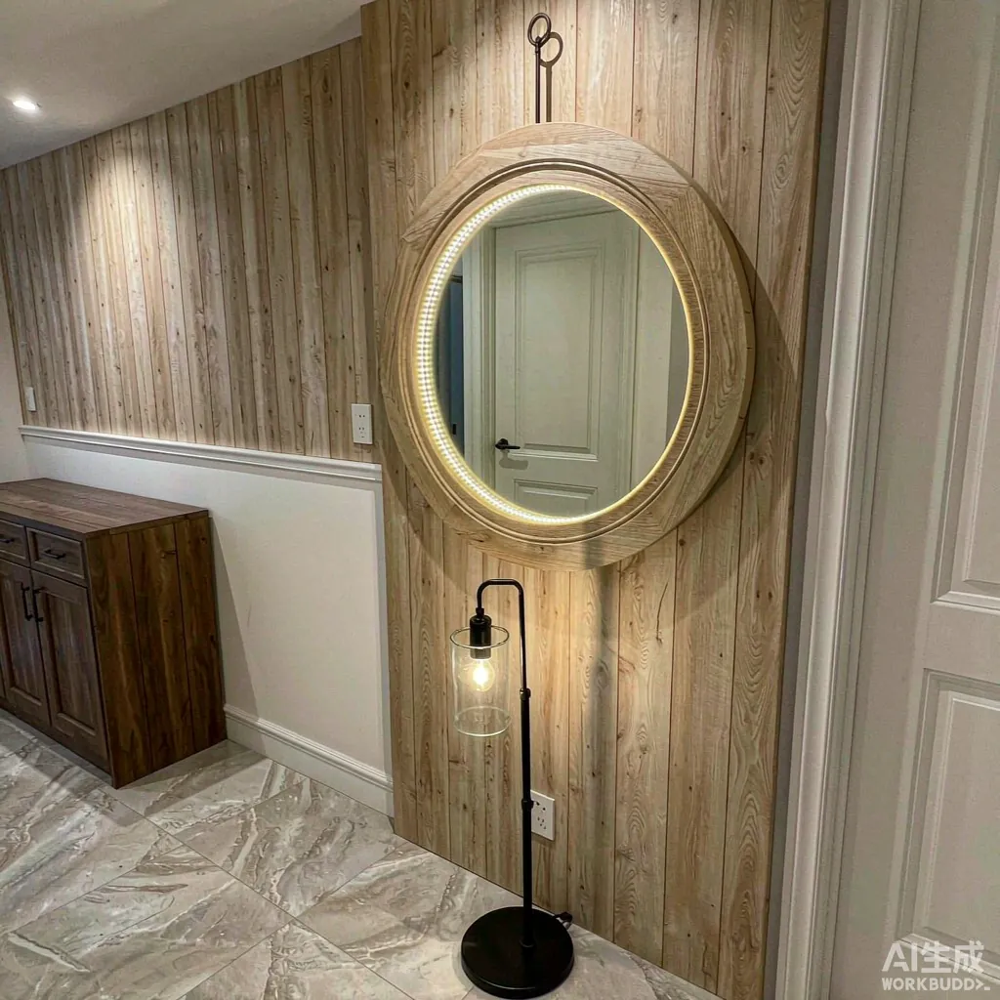
行动清单- ✅ 镜子装在大门侧墙（左手边青龙头）
- ✅ 选圆或椭圆镜
- ❌ 别让镜面正对大门、正对门窗
一个创业的小年轻来找我，说谈了几个合作，都卡在最后一口气上，总差那么一点。
我问他，你在家谈事，平时坐哪？他说就坐客厅沙发。我又问，沙发背后是什么？他说是落地窗。
我说，你找到症结了。你坐下的时候背后是空的，是窗，你整个人是悬着的，心里没底。你带着这股虚劲去谈事，对方是能感觉到的。风水里叫背后无靠，没有靠山。
他说，那我把沙发挪一挪？我说对，靠到实墙上去。要是户型不允许，就换高靠背沙发，或者在沙发后放一排矮柜、书架，给自己造个软靠。
两个月后他回我，合作成了。他笑着说，也不知道是风水灵，还是自己坐稳了腰杆硬了。我说，都一样。
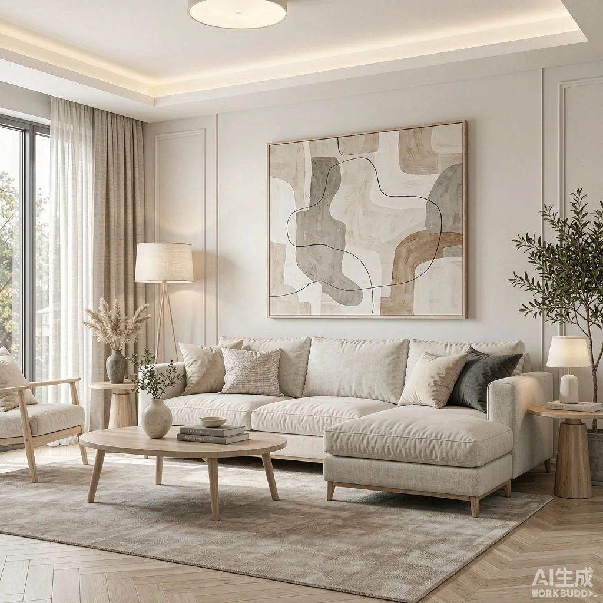
行动清单- ✅ 沙发尽量靠实墙
- ✅ 靠不了墙，用高靠背、矮柜、书架做软靠
- ❌ 别让沙发背后悬空或正对过道
我去过一户人家，客厅白天都得开灯，灯泡还坏了一个，一闪一闪的。
那家的男主人跟我诉苦，说家里人都不爱在客厅待，吃完饭各自回房，冷冷清清的。
我说，你这客厅这么暗，谁愿意待。客厅是家的面子，也是聚人气、聚财气的地方。灯要亮，灯泡坏了赶紧换。老话说，财神爷不进昏暗的地方，道理很实在，人都不爱在暗处待，何况财气。
后来他把主灯换了，又加了两个辅助灯，客厅亮堂堂的。他说，奇怪，家人竟然愿意在客厅坐下来了，小孩写作业也跑到客厅来。
我跟他说，卧室是另一套，要柔要暗，暖光最好，那是睡觉的地方，不能像客厅那么亮。明厅暗房，各有各的活法。
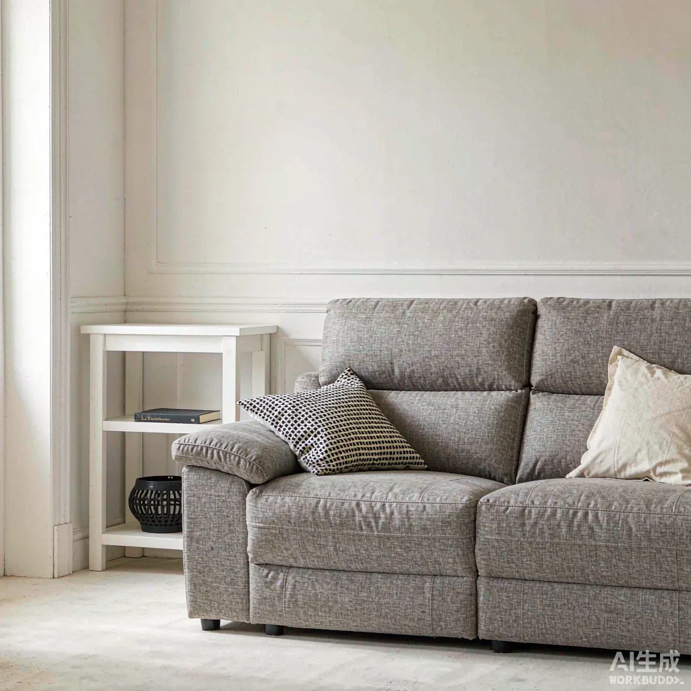
行动清单- ✅ 客厅保证主灯亮、采光足
- ✅ 卧室用暖色温、可调光
- ❌ 别让客厅昏暗、卧室刺眼
总有人问我，道长，家里的财位到底在哪？
我教他一个最笨也最管用的办法。站在大门口，往屋里看，客厅里离你最远的那个斜对角，就是明财位。进门四十五度斜对角，八九不离十。
这个角，是全家的聚财口。它要亮、要净、要有靠。我见过不少人，把垃圾桶、旧纸箱、不用的电器全堆在这个角上，等于亲手把财往外推。
财位放什么？一棵土培的发财树、金钱树，或者一尊聚宝盆。植物要常绿，叶子圆厚，别用带刺的，也别水培。水一多，就见财化水，财气跟着水流走了。
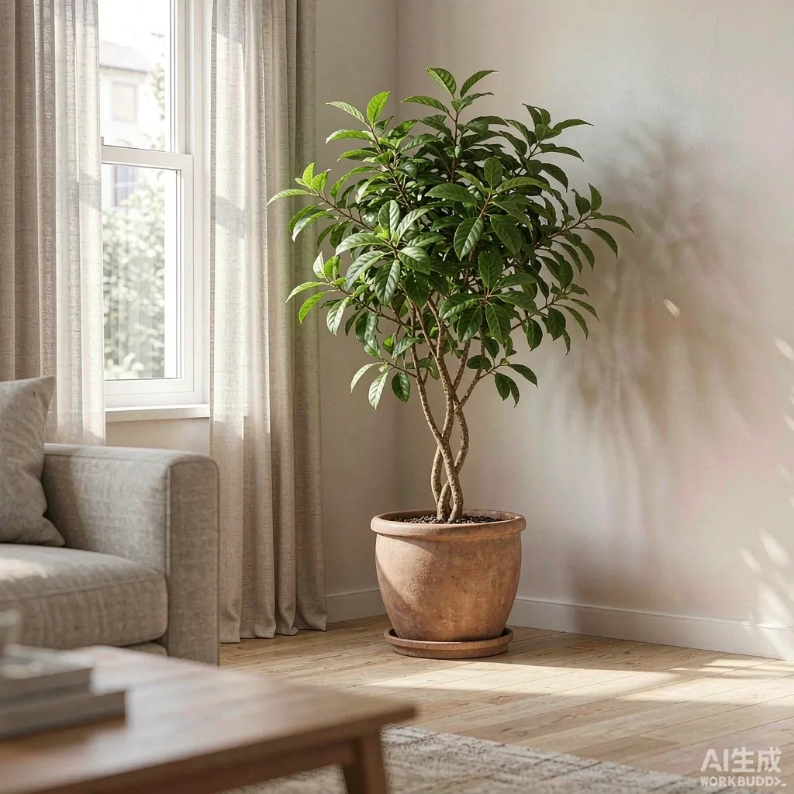
行动清单- ✅ 财位保持明亮、整洁、有靠
- ✅ 放土培常绿植物或聚宝盆
- ❌ 别堆杂物、垃圾桶，别放鱼缸和水培植物
有个客户，长期失眠，跑了好几家医院，查不出什么大毛病。
有一次我去他家看，进卧室一眼就明白了。他的床，正好摆在横梁的正下方。那道梁又粗又显眼，压在他床头正上方。
我说，你天天睡在这道梁底下，等于头上悬着一块石头，心里能不沉吗。风水里这叫横梁压顶，是家里最该避的形煞。老书里讲梁压床铺，病痛常顾，说的就是这种。
他问怎么办。我说，最彻底的是吊顶，把梁包进去，眼不见为净。层高不够包不了，就把床挪开，别睡在梁下。
他把床挪到了靠墙的位置。一段时间后跟我说，睡眠明显好了。是不是挪床的功劳，我不说满，但至少，头顶没东西压着了，心就轻了。
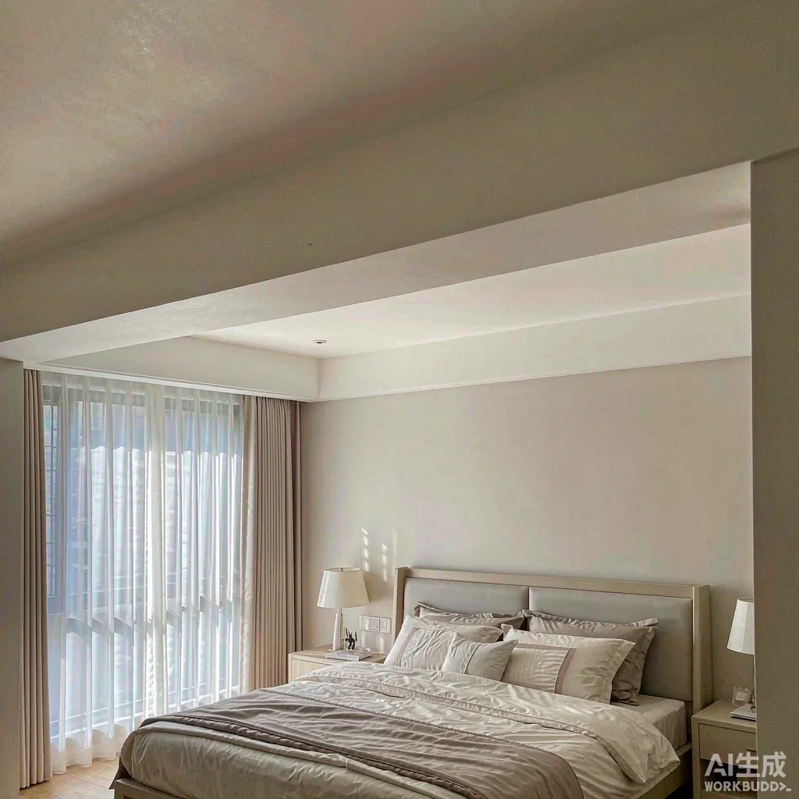
行动清单- ✅ 能吊顶就把横梁包掉
- ✅ 包不掉就挪家具，别在梁下久坐久卧
- ❌ 别让沙发、床、餐桌、书桌压在横梁正下
一位大姐来找我，说这半年老做噩梦，睡不沉，白天没精神。
我看了她的八字，又问她卧室怎么摆的。她说，床靠着窗，晚上能看星星，她觉得挺好。
我说，问题就在这。床头靠窗，背后是空的，你睡着的时候，整个人像悬在半空，心能安吗。老话有句口诀，床头靠墙，家业永昌；床头留空，万事成空。
她半信半疑，回家把床挪到靠墙的位置。过了一个月跟我说，怪了，不做噩梦了，觉也沉了。
我说，不是怪，是你背后有靠了。人睡踏实了，气就养回来了。道理不玄，就是安全感三个字。
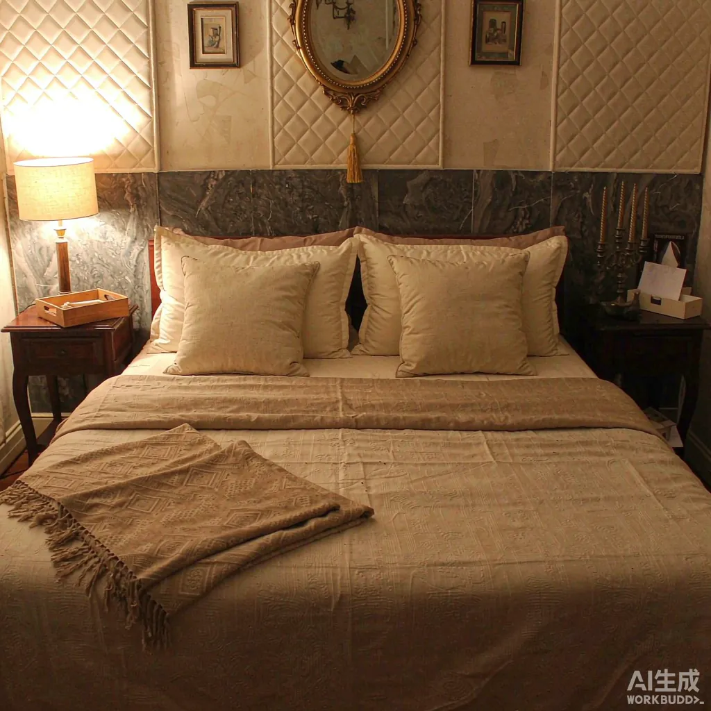
行动清单- ✅ 床头紧贴实墙
- ✅ 床头两侧留通道
- ❌ 别让床头靠窗、悬空、背后无依
一个做外贸的朋友，跟我说他这两年睡眠特别差，容易醒，醒了就再也睡不着。
我问他床怎么摆的。他说，卧室门一开，正好对着床，他躺在床上就能看见门外。
我说，你这是门冲床。门是气口，你躺在那儿，气直冲过来，你潜意识里一直绷着，怕有人进来，怎么能睡沉。床也别贴着窗户，又漏风又没遮拦。
他问怎么改。我说，能把床挪开最好，避开正对门。挪不开，就在床尾放个床尾凳，或者门和床之间立个屏风，让冲过来的气先缓一缓。
他后来在床尾加了个凳。用他的话说，说不清哪里不一样，就是觉着踏实了。
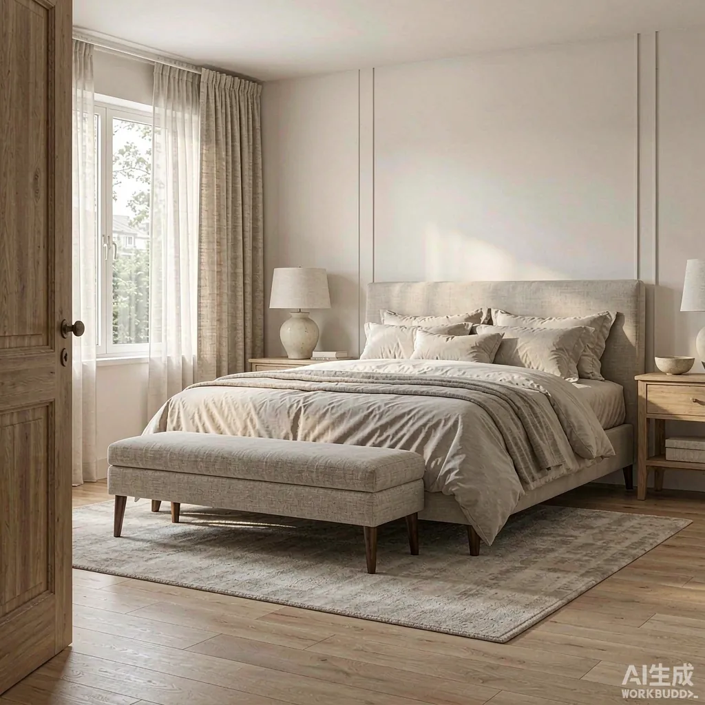
行动清单- ✅ 床避开正对房门、紧贴窗户
- ✅ 挪不开就用床尾凳、屏风缓冲
- ❌ 别让床"门一开就直冲"或"贴着窗睡"
一位年轻女客户，说最近半夜总被吓醒，心慌，不敢一个人睡。
我问她，卧室是不是有镜子对着床？她想了想说，对，梳妆台的镜子正对着床。
我说，症结就在这。半夜你迷迷糊糊醒过来，一睁眼看见镜子里自己的影子，魂都能吓掉半截。人最脆弱就是半睡半醒那一下，镜照眠人，伤神又伤和气，这是卧室第一大忌。
她问怎么办。我说，把镜子挪到床的侧面，或者干脆装进衣柜门里，用的时候拉开，不用就关上。
她把梳妆台调了个方向。后来跟我说，再没被吓醒过。
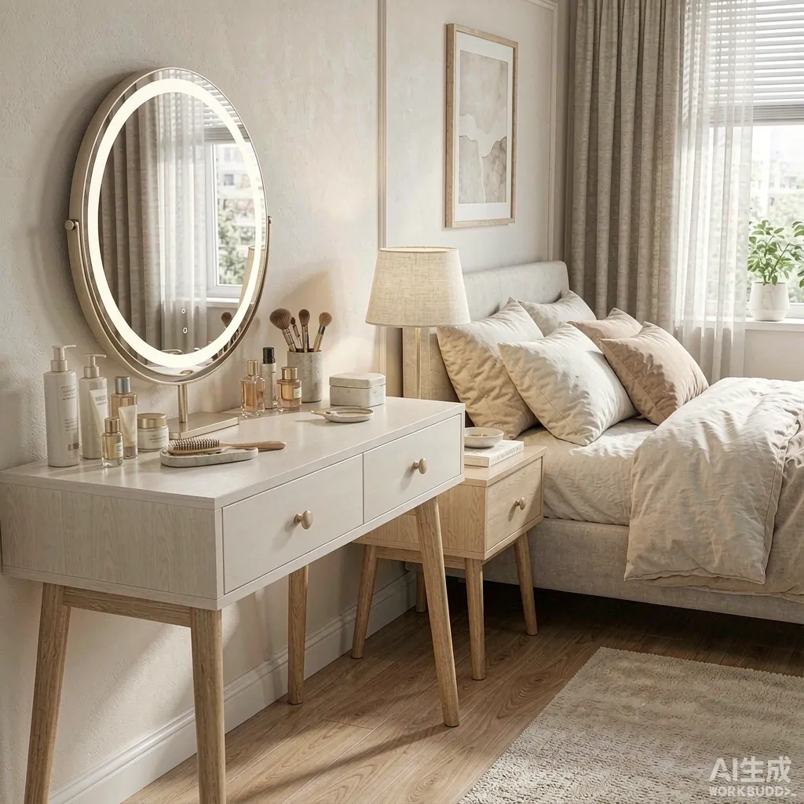
行动清单- ✅ 镜子放床侧或衣柜门内
- ✅ 睡觉时把镜面遮住或关进柜门
- ❌ 别让镜面正对床、正对床头
有次去给一户人家看宅，别的都还行，我蹲下来往床底看了一眼，说，这个得清。
床底下塞满了鞋盒、旧被子、落了灰的收纳箱，塞得满满当当，一点气都不透。
我跟那家男主人说，你这些旧物，与其说收在床底，不如说压在你身上。床底要透气，床最好离地半米，下面干干净净。床底一堵，气不顺，潮气重，睡上面的人容易犯困、睡不沉。
他半信半疑，周末花了一天把床底清空。后来跟我说，睡了这么多年，头一回觉着觉这么沉。
我还补了一句，卧室里的电器也少放，电视、路由器能挪出去就挪出去，不是辐射吓人，是这些东西让卧室静不下来。
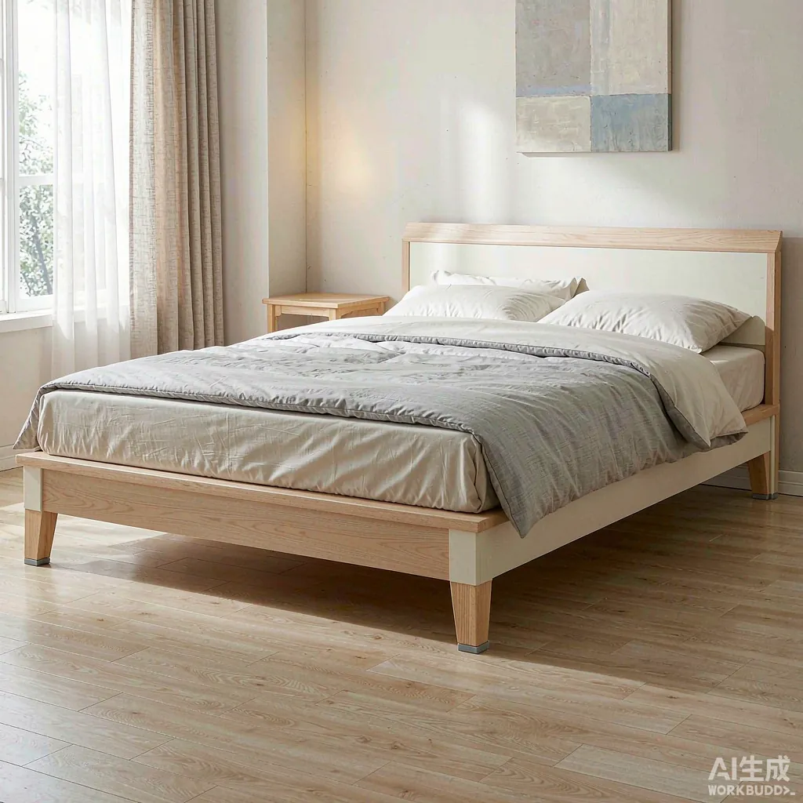
行动清单- ✅ 床离地，床底保持干净通风
- ✅ 卧室少放电视、路由器等电器
- ❌ 别把床底当仓库
一对夫妻来找我，说这两年总为鸡毛蒜皮吵架，一言不合就红脸。
我看了盘，又问了句，你家灶台和水槽是不是正对着？两人对视一眼，说，还真是。
我说，灶是火，水槽是水，水火正对着，就是水火相冲。一个开火做饭，一个冷水洗菜，两股气直直地顶在一起，家里就容易起口舌。你们吵架，一半是这个格局拱的火。
我还说，冰箱也别正对灶，一个冷一个热，人吃了这种环境下做的饭，肠胃都遭罪。
后来他们把厨房改了，灶和水槽错开，中间留了段台面。上个月再见，两人有说有笑，说好久没怎么拌嘴了。
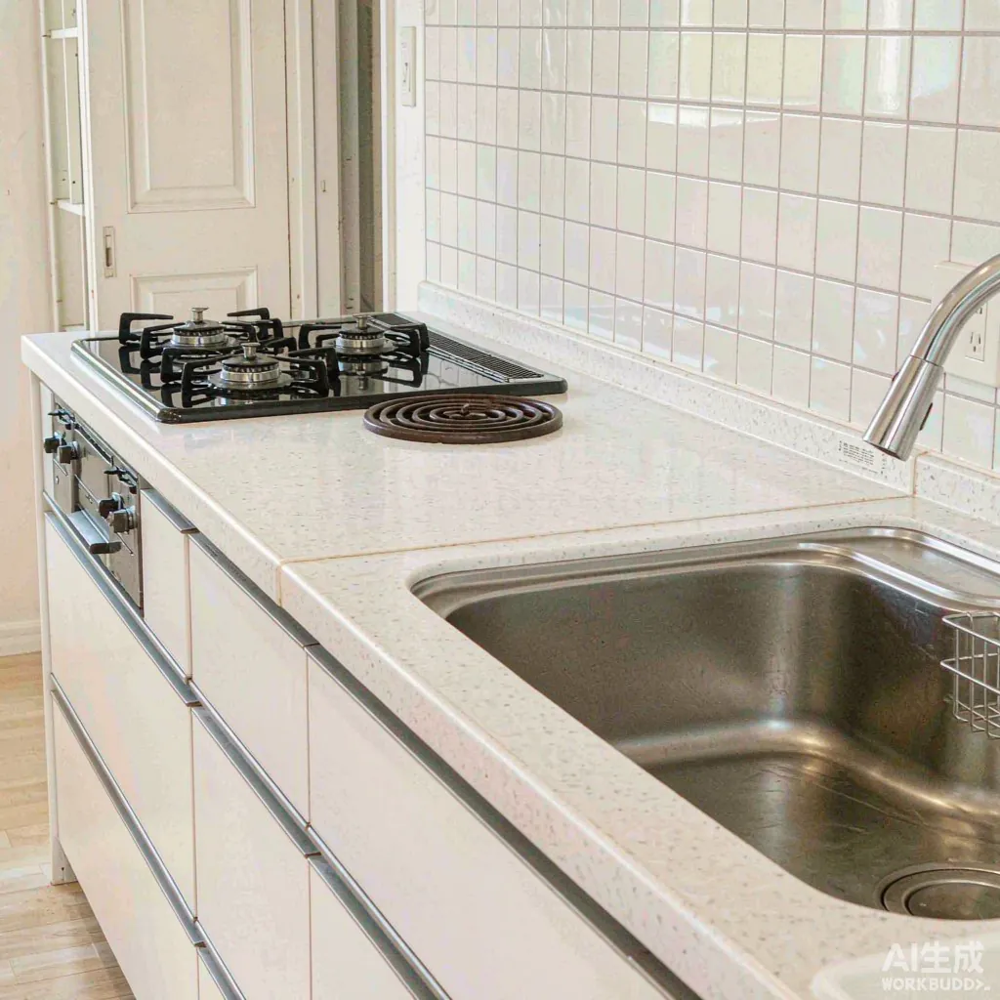
行动清单- ✅ 灶与水槽、冰箱错开，留台面过渡
- ✅ 灶背后靠实墙
- ❌ 别让灶、水槽、冰箱一条直线相冲
一位老客户搬了新房，住了两个月，说家里人脾气都变差了，吃饭也总没胃口。
我去一看，好家伙，厨房门正对着厕所门，两扇门跟照镜子似的。
我说，一边是做饭的火，一边是厕所的秽气，两扇门正对着，饭怎么做都不香。火气撞秽气，家里不吵才怪。这在风水里是大忌。
他说，门的位置不好改。我说，那就不改门，改习惯。两扇门都常关着，各挂一道门帘，中间要是放得下，摆盆阔叶植物，用绿意把两股气隔开。关键是厕所一定勤通风、勤打扫，别让它有味。
他照做了。后来跟我说，家里确实清净了，吃饭也香了。
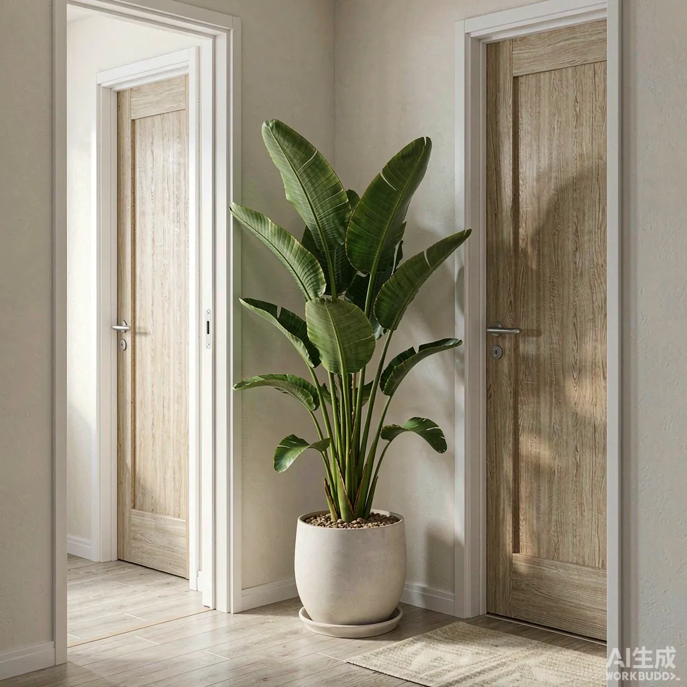
行动清单- ✅ 厨卫门常关，各挂门帘
- ✅ 中间放阔叶植物隔断
- ❌ 别让厨房门、厕所门正对直冲
有客户发户型图让我把关。我一眼扫过去，跟他说，这房子，你重点看卫生间的位置。
他问怎么了。我说，你家的厕所，正好压在房子正中央。正中央在风水里叫中宫，是全家的气场枢纽。你把排污口放在心脏的位置，一家人的健康和运势都跟着受累。
他有点慌，问能不能化解。我说，位置改不了，就靠习惯补。厕所门常关，勤通风、勤打扫，里面放块硅藻垫吸潮，门上挂个化煞的小挂件。别让这个心脏位置，变成全家最堵、最臭的地方。
他后来照做，说虽然格局没变，但家里清爽了，人住着也安心了。
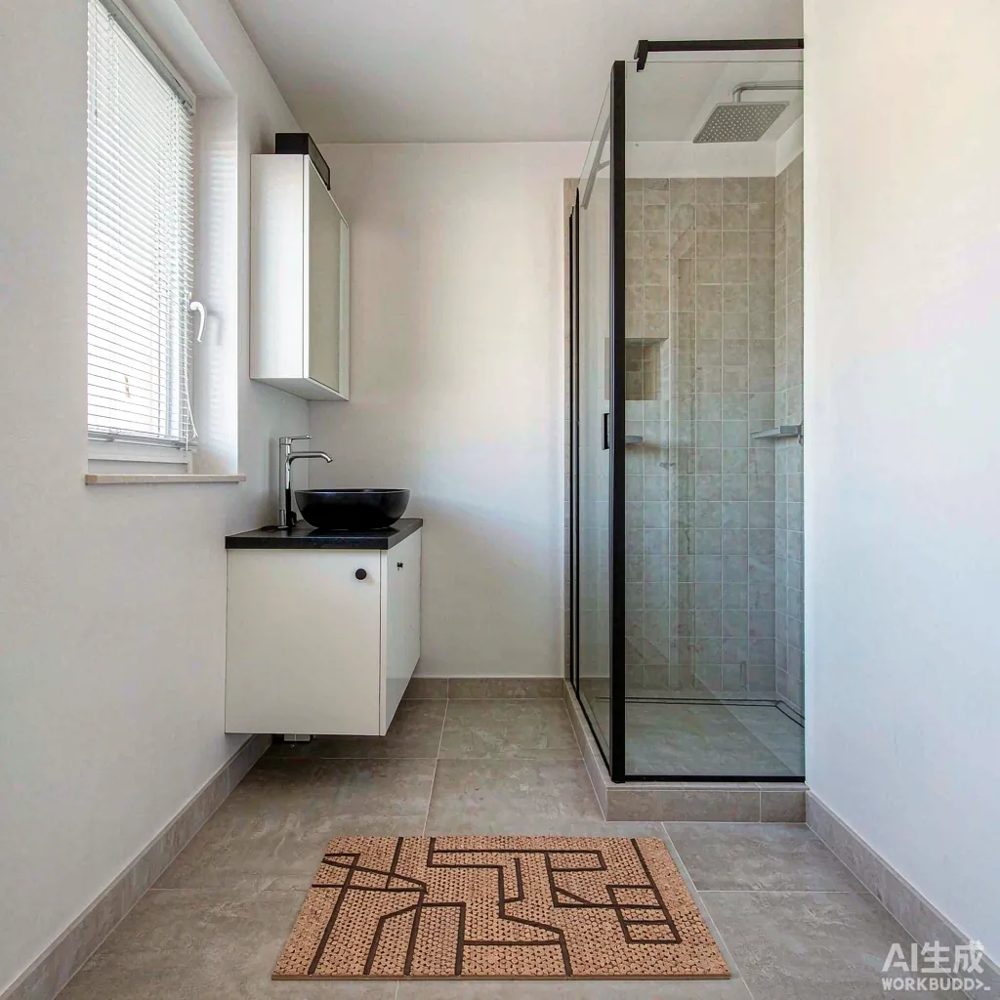
行动清单- ✅ 厕所门常关，勤通风勤打扫
- ✅ 放硅藻垫吸潮，门上挂化煞挂件
- ❌ 别让厕所长期潮湿、有味、门大敞
有位老哥，爱养花，家里客厅摆了盆仙人掌，说是好养，还能防辐射。
我笑着跟他说，仙人掌这东西，放家里可不算吉利。它浑身带刺，风水里带刺的植物主口舌是非，尤其别往财位放。你想招财，结果摆了个扎人的，钱没来，麻烦先来了。
他问那养什么。我说，发财树、金钱树、富贵竹，叶子圆、厚、寓意好，是首选。财位上放植物，一定要土培，水培的水一多，就见财化水。
我还特意叮嘱，植物要养得精神，一旦发黄枯萎，赶紧换。别让一棵死气沉沉的枯树，天天对着你，那不是招财，是招晦气。
他把仙人掌搬去了阳台，财位换了盆土培的发财树。后来见着我，说看着那棵绿油油的树，心里就舒坦。
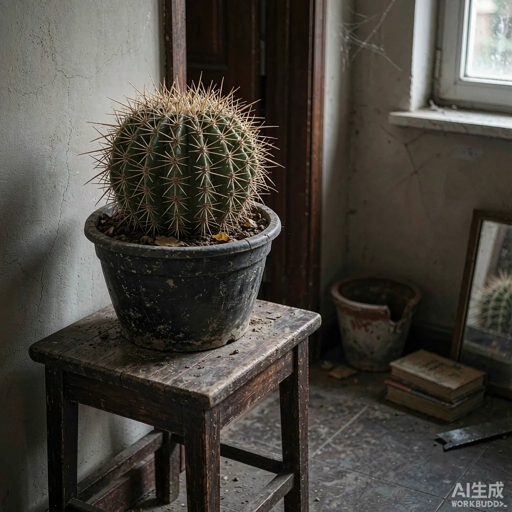
行动清单- ✅ 选发财树、金钱树、富贵竹等圆叶常绿植物
- ✅ 财位植物用土培
- ❌ 别在财位放仙人掌、藤蔓、水培植物
一个做生意的老板，办公室摆了只大鱼缸，就放在他以为的财位上，说是催财。
我去看了一眼，跟他说，你这鱼缸，摆反了。
他一脸不解。我说，水这东西，风水里最讲究位置。山管人丁水管财，水能催财，也能化财。你把鱼缸放在明财位上，水一流动，财气就跟着散了，这叫见财化水。你以为在招财，其实在漏财。
他说那摆哪。我说，避开财位，摆在偏一点、但你能常看见的位置。水要活，过滤循环别停，鱼要养得精神，别病恹恹的。鱼死水浑，比不放还糟心。
他把鱼缸挪了位置，又换了缸干净的水。后来跟我说，别的没觉得，就是每天看着那缸活水，心情都好了。
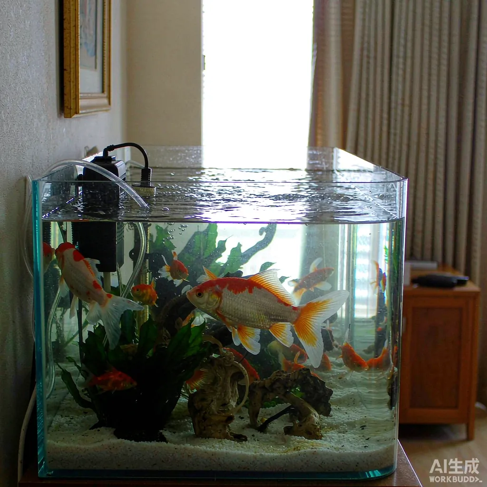
行动清单- ✅ 鱼缸放偏位，避开明财位
- ✅ 水保持循环、干净，鱼养得精神
- ❌ 别把鱼缸、风水轮放财位，别让水发浑
一位客户，前阵子请了尊貔貅回家，摆在客厅柜子上，头朝着屋里。
我一看就跟他说，你这貔貅，摆得不对。貔貅有嘴无肛，只进不出，是招财神兽，但它得头朝外。头斜对着大门或窗外，叫出门衔财，把外面的财叼回来。你这头朝屋里，财反而不进了。
他赶紧问还有什么讲究。我说，别让它对着厕所、对着镜子，脏处和反光都冲了它的灵性。家里要是有横梁压顶化解不了的，就挂葫芦，梁两端各一个，把往下压的煞气收住。水晶、聚宝盆，放财位就好。
他回去把貔貅调了方向。后来跟我说，道长，摆件这东西，以前觉得是买个心安，现在才知道，方向摆不对，白搭。
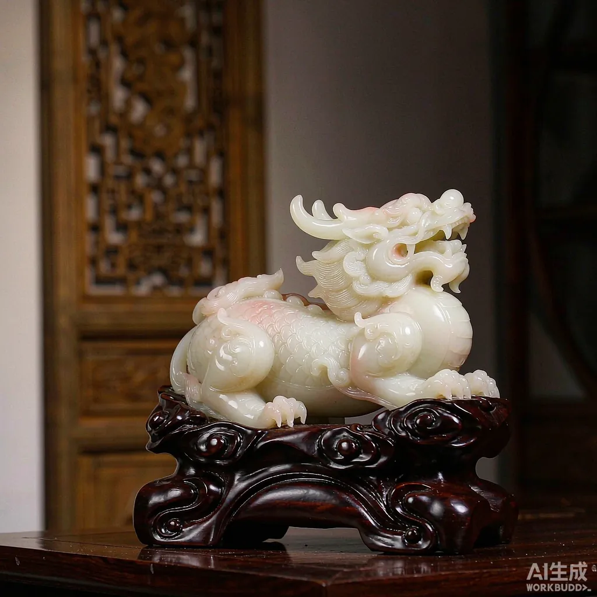
行动清单- ✅ 貔貅头斜对大门或窗外
- ✅ 葫芦挂横梁两端化梁煞
- ❌ 别让貔貅对着厕所、镜子，别让它头朝屋内
有位家长带着孩子来找我，急得不行，说孩子这学期成绩掉得厉害，人也蔫蔫的。
我让孩子坐下，慢慢聊。聊着聊着，我问他，你的书桌摆在哪？孩子说，靠门的位置，背对着门。
我心里就有数了。跟家长说，先别急着报补习班，回家把书桌调一调。书桌座位背后要有实墙，别背对门。背后有靠，孩子才坐得住，坐得稳。前面留点空，别脸贴着墙，憋得慌。桌子左上角，就是孩子坐好后左手边，放个文昌塔，或者插四支富贵竹，水生木，旺文气。
家长照做了。一个学期后跟我说，孩子状态回来了，成绩也慢慢上来了。我说，功劳大半是孩子自己，风水只是让他坐得住了。
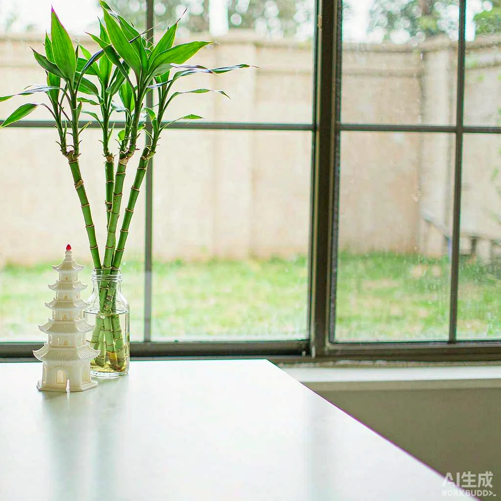
行动清单- ✅ 书桌背后靠实墙、前面留空
- ✅ 左上角放文昌塔或四支富贵竹
- ❌ 别让书桌背门、压梁、面墙
一个大学生来找我，说在宿舍复习总走神，看两页书就想刷手机。
我问他，书桌是不是正对着窗？他说是，一抬头就是外面，人来人往的。
我说，这就是症结。书桌正对窗，风水里叫望空，人坐在这儿，心跟着窗外就飞了，魂不守舍，哪还有心思看书。书桌也别背对门，背后是人来人往，你看不见，心总悬着。
我教他摆法：桌子靠墙，人面朝里，背不悬空，眼不望空。桌面上左边高、右边低，青龙位高、白虎位低，书本台灯放左边，杂物别堆右边。
他回去照着调了。后来跟我说，好像也没别的，就是坐得住了，能看进去了。
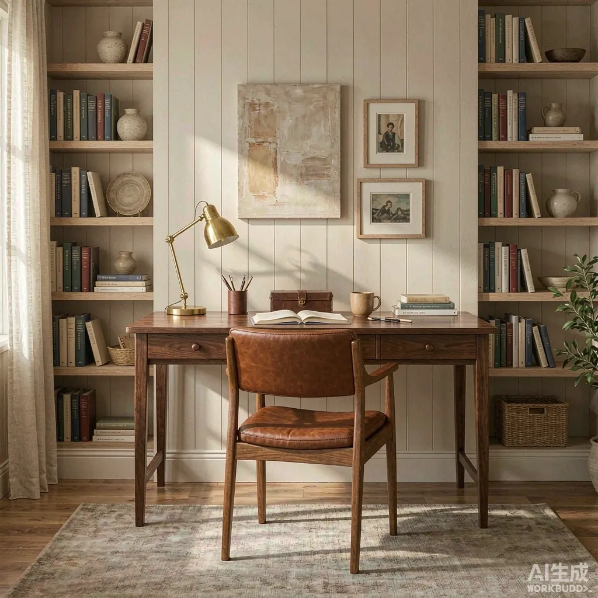
行动清单- ✅ 书桌靠墙、面朝里，背有靠、前不望空
- ✅ 桌面左高右低
- ❌ 别让书桌正对窗、背对门
一个在互联网公司做产品的朋友，来找我诉苦，说这两年特别累，总感觉背后被人议论，升职也轮不到他。
我问他，你工位背后是什么？他说，是过道，一天到晚人来人往。
我说，你这不是累，是悬。你一天八小时背对着人流，坐不踏实，心也悬着，还容易招小人、被人背后说。风水里叫背后无靠。
他说工位是公司安排的，换不了。我说，那就换把高靠背椅，背后再放个书柜或者屏风，给自己造个靠。职场上，靠山不是靠谁，是先让自己坐得住。
他后来加了把高靠背椅，又想办法在背后加了个矮柜。用他的话说，坐下去那一刻，心就定了。
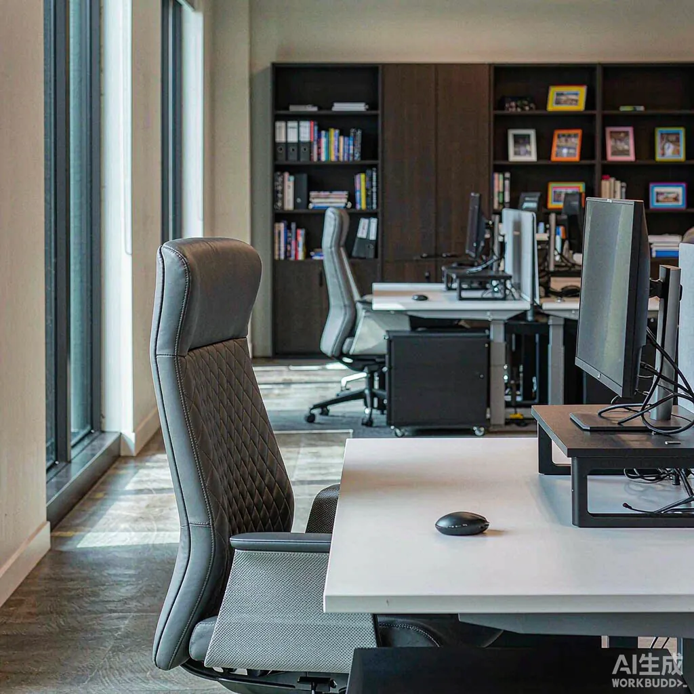
行动清单- ✅ 工位背后有墙、有柜
- ✅ 靠不上就换高靠背椅、加书柜屏风
- ❌ 别长期坐在背对过道、背对门的位置
有位做销售的小伙子，跟我说业绩不错，就是心累，一天到晚静不下来。
我问他坐哪。他说，工位正对着办公室的门，谁进来他都是第一个看见。
我说，你这是坐了个门冲位。工位正对门、斜对门，气直冲过来，一天到晚有人进出，你抬头就是动静，能不累吗。背对门更糟，背后无靠，人来人往你看不见，心总悬着。
我教他，最好的位置，是能看到门、但又不正对门。门在斜前方，谁来了你一眼看见，又不被气流直冲。这叫坐得稳，看得清。
他后来跟领导磨了磨，换了个斜对门的位置。他说，怪了，换过去之后，心真的静了，业绩反而更稳。
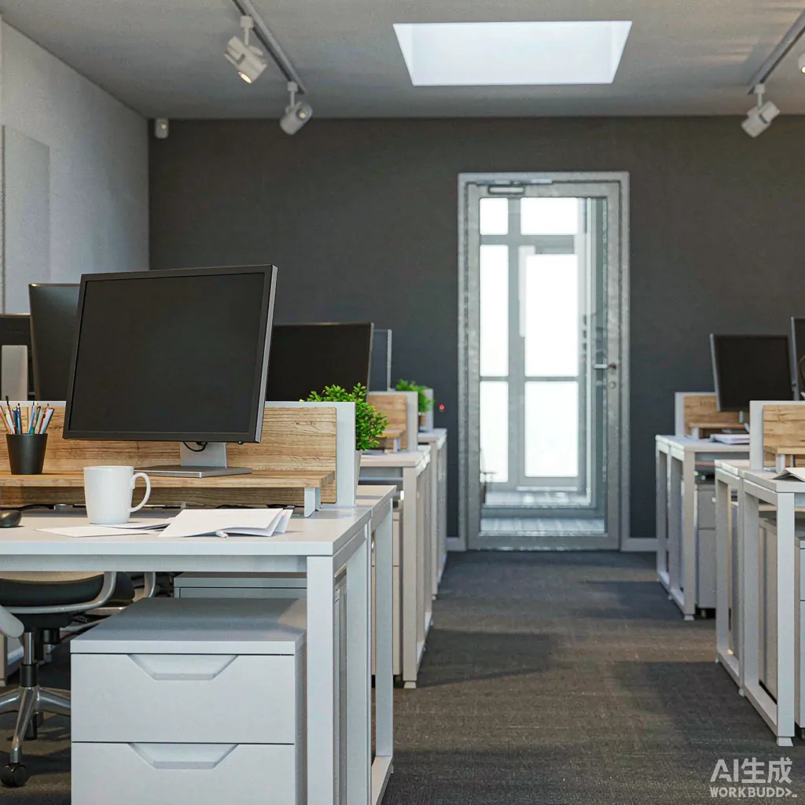
行动清单- ✅ 选能看见门、但不对门的工位
- ✅ 实在冲门，用绿植、文件架挡一挡
- ❌ 别坐正对门、别坐背对门
有回给一家公司看办公区，走到一个工位前，我停了一下。
那工位上方正好压着一道横梁，对面还是整面玻璃墙，反光刺眼。
我跟负责人说，这个位子，坐的人难受。横梁压在工位上方，一天八小时，头顶像压着块石头，压力大、思路堵，越坐越憋屈。对面玻璃反光，晃得眼睛累，心里烦。这种位置，谁坐谁累。
他问怎么办。我说，挪不开工位，就化解。梁下挂个葫芦，或者加一盏向上的灯，把压下来的气顶一顶。对面反光，加个绿植、挡板遮一遮。
后来那家公司的员工私下跟我说，坐那个位子的人换到别处后，整个人精神多了。
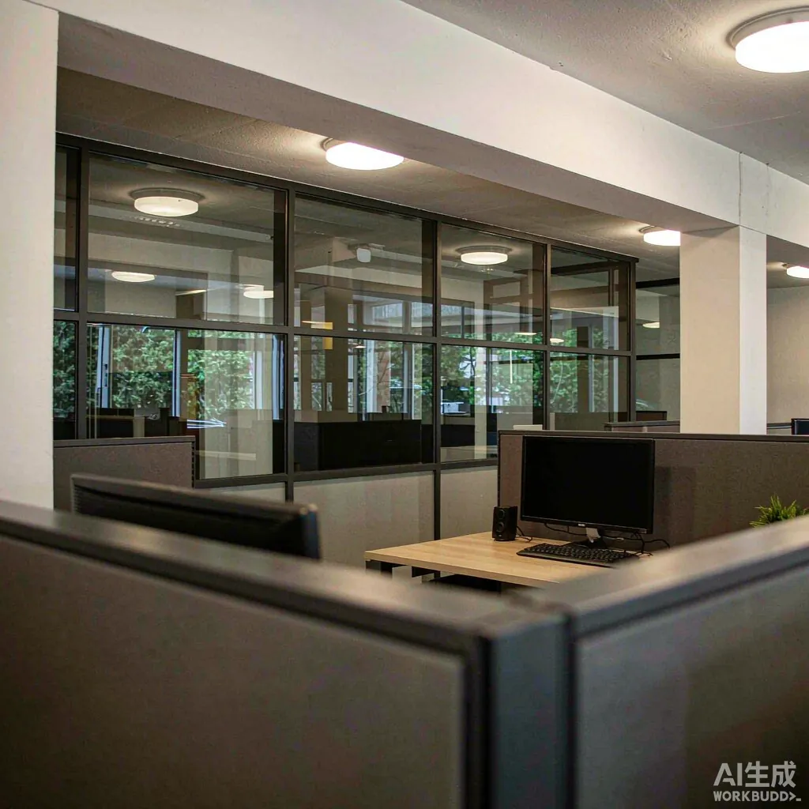
行动清单- ✅ 梁下挂葫芦或加向上灯光
- ✅ 对面反光加绿植、挡板
- ❌ 别长时间坐在横梁正下、反光直照的位子
一位做财务的女士，跟我说，总觉得上班烦躁，容易出错，坐不住。
我让她拍张办公桌的照片。一看，桌上一团乱，文件、零食、杂物全堆在右手边，左边反而空着。
我说，办公桌不大，摆法有门道。讲究左高右低。左边是青龙位，宜高宜静；右边是白虎位，宜低宜空。你现在反过来，杂物全堆右手边，人坐着就容易烦躁、出错。
我教她，文件、台灯、电话放左边，杂物收起来，别堆右边。左手边再放盆小绿植，富贵竹、发财树都行，植物属木，木气生发，旺的是事业运。绿植要精神，别养一盆半死不活的。
她回去把桌子理了一遍。后来跟我说，桌面清爽了，人也不那么焦躁了。
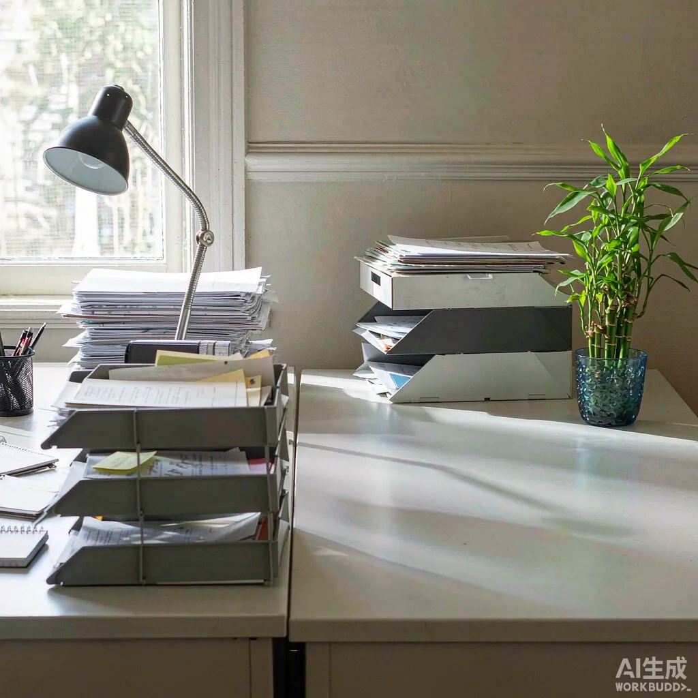
行动清单- ✅ 桌面左高右低，文件台灯放左
- ✅ 左手边放盆精神的小绿植
- ❌ 别把杂物、垃圾堆在右手边
有位做了二十年生意的老哥，请我去看他的新办公室。坐下聊了一会儿，我问他，你这老板椅背后，是窗户还是墙？
他说是窗户，采光好。
我说，采光是好，可你这个位子坐不住。老板的椅子背后，一定要是一面实墙。背后有靠，坐镇一方，压得住场。你现在背后是窗，气场全散了，做决策发虚，下面的人心里也没底。
他问，那怎么办。我说，要是能调，把老板位调到背后靠墙的地方。其次，你的位子要能看到门，一眼望见整个办公室，才有掌控感。看不到门的老板位，心里没数。
他后来把办公室重新排了，老板椅背后靠了墙，正对门口。他说，道长，坐进去那一下，还真有点坐镇的感觉了。
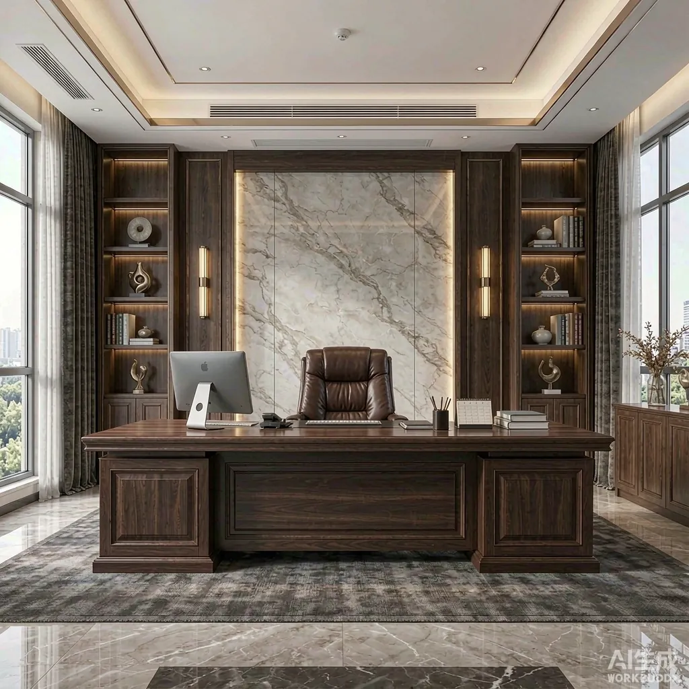
行动清单- ✅ 老板椅背后靠实墙，能看到门
- ✅ 背后是窗时，加高靠背椅或柜子
- ❌ 别让老板位背后悬空、背对门、不见门